บทที่ 5 ระบบเครือข่ายเสมือน
ในบทนี้ผู้เขียนจะกล่าวถึงระบบเครือข่ายเสมือนโดยจะเน้นที่การสร้างและใช้งานระบบเครือข่ายดังกล่าวร่วมกับการใช้งานซอฟต์แวร์คิวอีมูเควีเอ็ม
ระบบเครือข่ายเสมือนคือระบบซอฟต์แวร์ที่ถูกสร้างขึ้นให้ทำหน้าที่ส่งรับข้อมูลภายในระบบเครือข่าย
โดยมีหน้าที่หลักคือ การเชื่อมต่อหน่วยประมวลผลที่อยู่ภายในระบบประมวลผลกลุ่มเมฆ
เช่น วีเอ็ม หรือ เครื่องคอมพิวเตอร์จริง หรือ คอนเทนเนอร์
เข้าด้วยกันและติดต่อกับระบบเครือข่ายอื่นเช่นอินเตอร์เน็ต เพื่อประมวลผลแอปพลิเคชันตามความต้องการของผู้ใช้
ตารางที่ 5-1 หน่วยประมวลผลในระบบเครือข่ายสองระดับ
|
ระดับเสมือน |
· คอมพิวเตอร์เสมือน · เน็ตเวิร์คอินเตอร์เฟสการด์เสมือน · สวิตช์เสมือนแบบเลเยอร์สองและเลเยอร์สาม · เร้าเตอร์เสมือน · สายเคเบิ้ลเสมือนสำหรับเชื่อมต่อสวิตช์และเร้าเตอร์ · ฟังก์ชั่นการประมวลผลระบบเครือข่ายเสมือนอื่นๆ |
|
ระดับฮาร์ดแวร์ |
· คอมพิวเตอร์เซิร์ฟเวอร์ · เน็ตเวิร์คอินเตอร์เฟสการด์ · ฮาร์ดแวร์สวิตช์แบบเลเยอร์สองและเลเยอร์สาม · อุปกรณ์เร้าเตอร์ · สายเคเบิ้ลสำหรับเชื่อมต่อสวิตช์และเร้าเตอร์ · อุปกรณ์ฮาร์ดแวร์ที่เกี่ยวข้องกับระบบเครือข่ายอื่นๆ |
ระบบเครือข่ายเสมือนนั้นสืบเนื่องมาจากคุณสมบัติของระบบเครือข่ายที่เป็นซอฟต์แวร์ที่จำลองฟังก์ชันการทำงานของอุปกรณ์เครือข่ายฮาร์ดแวร์
หลายอย่าง
และสามารถถูกเรียกขึ้นมาใช้งานเพื่อรองรับความต้องการทางด้านระบบเครือข่ายของแอปพลิเคชันและทำลายลงเมื่อเสร็จงานได้อย่างรวดเร็ว
ดังนั้นระบบเครือข่ายเสมือนจึงมีความยืดหยุ่นสูงในการใช้งานเช่นเดียวกันกับการใช้งานระบบคอมพิวเตอร์เสมือนหรือวีเอ็ม
ในขณะที่ระบบคอมพิวเตอร์เสมือนคือการประมวลผลคอมพิวเตอร์ในสองระดับของนามธรรมคือระดับวีเอ็มและระดับเครื่องจริง
ระบบเครือข่ายเสมือนก็คือการประมวลผลของระบบเครือข่ายในสองระดับคือระดับของฟังก์ชันการทำงานของอุปกรณ์เครือข่ายเสมือนและระดับการประมวลผลของอุปกรณ์เครือข่ายจริง
ระบบเครือข่ายเสมือนที่ผู้เขียนจะกล่าวถึงในที่นี้คือระบบเครือข่ายเสมือนที่ถูกสร้างขึ้นมาจากซอฟต์แวร์โอเพนวีสวิตช์
(openvswitch) ซึ่งเป็นโอเพนซอร์สซอฟต์แวร์ที่ได้รับการนำไปใช้งานอย่างแพร่หลายบนระบบลินุกซ์
ระบบโอเพนวีสวิตช์เป็นซอฟต์แวร์สวิตช์ที่มีความสามารถรองรับการทำงานแบบซอฟต์แวร์ดีไฟนด์เน็ตเวิร์ค
(Software-Defined Network)
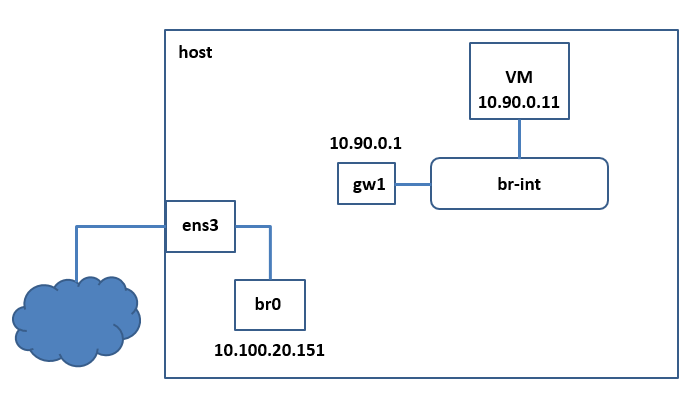
ภาพ 5-1 การสร้างสวิตช์เสมือนสำหรับเครือข่ายเสมือนสำหรับซับเน็ต
10.90.0.0/24
และถูกออกแบบมาเพื่อใช้กับระบบคอมพิวเตอร์เสมือนหลายแบบอาทิเช่นระบบคิวอีมูและระบบเซน
ในบทนี้ผู้เขียนจะได้บรรยายการใช้งานระบบโอเพนวีสวิตช์ร่วมกับไฮเปอร์ไวเซอร์คิวอีมูดังต่อไปนี้
5.1 การติดตั้งและใช้งานลินุกซ์บริดจ์โดยใช้ระบบเน็ตแพลนในอูบุนตู
20.04
สมมุติว่าในระดับฮาร์ดแวร์จริงมีเครืองคอมพิวเตอร์จริงหรือโฮสต์คอมพิวเตอร์หนึ่งเครื่องในภาพที่ 5-1 ที่เชื่อมต่อกับระบบเครือข่ายผ่านเน็ตเวิร์คอินเตอร์เฟส
อีเอ็นเอสสาม (ens3) โฮสต์คอมพิวเตอร์เครื่องนี้ใช้ระบบลินุกซ์เป็นโอเอส
ในบทนี้เราสมมุติว่าโอเอสของเครื่องโฮสต์และของวีเอ็มทุกเครื่องคือระบบอูบุนตูเวอร์ชัน
20.04 (Ubuntu 20.04)
ในบทที่ 4 อุปกรณ์สำหรับระบบเครือข่ายเสมือนอุปกรณ์แรกที่ได้รับการติดตั้งคือระบบลินุกซ์บริดจ์
br0 ที่ทำหน้าที่เป็นสวิตช์เสมือนที่ได้รับการติดตั้งเพื่อทำให้โฮสต์คอมพิวเตอร์เครื่องนี้สามารถรันวีเอ็มที่มีไอพีแอดเดรสอยู่ในซับเน็ตเดียวกันกับเครื่องโฮสต์ได้ดังที่ได้กล่าวไปโดยละเอียดแล้วในบทที่
4
ในบทนี้ผู้เขียนสมมุติให้ให้เครื่องโฮสต์เครื่องนี้มีไอพีแอดเดรสและซับเน็ตเดียวกันกับในบทที่
4 และเชื่อมต่อกับลินุกซ์
บริดจ์ผ่านอินเตอร์เฟสเสมือนชื่อเดียวกับชื่อบริดจ์คือ br0 แต่การติดตั้งและกำหนดค่าสำหรับ br0 ในบทนี้จะแตกต่างจากในบทที่
4 เนื่องจากอูบุนตูเวอร์ชัน
20.04 ใช้ระบบเน็ตแพลน
(netplan) ในการกำหนดค่าไอพี
ดังนั้นการกำหนดค่าจึงมีรายละเอียดของไฟล์ที่ใช้ในการกำหนดค่าและรูปแบบของการกำหนดค่าที่แตกต่างกัน
ในอันดับแรก
ผู้อ่านต้องติดตั้งแพกเกจ เหมือนที่เคยทำในบทที่ 4.6.1 ดังนี้
$ sudo apt-get update$ sudo apt-get install bridge-utils |
หลังจากนั้น
ผู้อ่านต้องกำหนดค่าพารามีเตอร์สำหรับบริดจ์ br0 ในไฟล์ /etc/netplan/00-installer-config.yaml ข้างล่างเพื่อกำหนดให้ br0 เชื่อมต่อกับ eno1 เพื่อส่งข้อมูลออกสู่ระบบเครือข่าย
และกำหนดค่าไอพีแอดเดรสของ br0 ให้เป็น 10.100.20.151/24
เมื่อเสร็จแล้วผู้อ่านต้องออกคำสั่ง netplan apply เพื่อให้โฮสต์โอเอสอ่านค่าจากไฟล์และกำหนดค่าพารามีเตอร์เหล่านั้นในเน็ตเวิร์คสแตกในเคอร์เนิลของโฮสต์โอเอส
On Host: $ sudo vi /etc/netplan/00-installer-config.yaml $ cat /etc/netplan/00-installer-config.yaml# This is the network config written by 'subiquity'network: ethernets: eno1: dhcp4: false bridges: br0: interfaces: [ eno1 ] parameters: stp: true forward-delay: 0 addresses: - 10.100.20.151/24 gateway4: 10.100.20.1 nameservers: addresses: - 8.8.8.8 search: - tu.ac.th$ $ sudo netplan apply |
ในไฟล์ /etc/netplan/00-installer-config.yaml ผู้อ่านจะเห็นว่ามีการกำหนดให้ eno1 ไม่ใช้ดีเอชซีพีเพื่อกำหนดค่าไอพี
และมีการกำหนดค่าไอพีของ br0 พร้อมทั้งค่าเน็ตเวิร์คเกตเวย์ให้เป็น 10.100.20.1 และกำหนดให้ค่าไอพีของดีเอ็นเอส
(DNS) เซิร์ฟเวอร์คือ
8.8.8.8
หลังจากนั้น เมื่อผู้อ่านต้องการสร้างวีเอ็มและกำหนดให้วีเอ็มเชื่อมต่อกับ
br0 ผู้อ่านก็สามารถทำตามขั้นตอนในบทที่
4.6.2 ได้เลย
5.2 การเชื่อมต่อวีเอ็มเข้ากับซอฟต์แวร์สวิตช์เสมือนด้วยโอเพนวีสวิตช์
ในอันดับถัดไปผู้เขียนจะแสดงการใช้ซอฟต์แวร์โอเพนวีสวิตช์สร้างสวิตช์เสมือนใหม่ชื่อว่า
br-int ซึ่งเป็นสวิตช์เสมือนภายในเครื่องโฮสต์
ที่สามารถใช้เชื่อมต่อกับวีเอ็มและอุปกรณ์ฮาร์ดแวร์ที่เป็นระบบเครือข่ายจริง และเชื่อมต่อกับซอฟต์แวร์ที่มีฟังก์ชันการทำงานเหมือนกับอุปกรณ์ในระบบเครือข่าย
(เช่น สวิชเสมือน และเร้าเตอร์เสมือน เป็นต้น)
ในภาพ 5-1 ผู้เขียนสร้างเน็ตเวิร์คอินเตอร์เฟสเสมือน gw1 และกำหนดให้มีค่าไอพีแอดเดรสคือ
10.90.0.1/24 ซึ่งต่อไปผู้เขียนจะใช้อินเตอร์เฟสนี้เป็นอุปกรณ์เกตเวย์สำหรับถ่ายโอนข้อมูลจากซับเน็ต
10.90.0.0/24 ออกสู่โลกภายนอก
ดังนั้นในที่นี้ซับเน็ตนี้จึงเป็นซับเน็ตของระบบเครือข่ายเสมือนที่ผู้เขียนตั้งใจสร้างขึ้นเพื่อมใช้เชื่อมต่อวีเอ็มกลุ่มหนึ่งในซับเน็ตเดียวกัน
ผู้เขียนจะบรรยายขั้นตอนโดยละเอียดโดยสมมุติว่าผู้อ่านเป็นผู้ปฏิบัติดังนี้
ในอันดับแรก ผู้อ่านล้อกอินเข้าสู่เครื่องโฮสต์และออกคำสั่งต่อไปนี้เพื่อสร้างสวิตช์เสมือน
br-int แ ละ
สร้างอินเตอร์เฟส gw1 ให้เป็นพอร์ตแบบโอเพนวีสวิตช์แบบ internal สำหรับใช้เชื่อมต่อภายในเครื่องโฮสต์ขึ้น โดยที่พอรต์นี้จะเป็น
ซอฟต์แวร์พอร์ตๆหนึ่งของสวิตช์ br-int
On Host: $ sudo apt install openvswitch-switch$ sudo ovs-vsctl add-br br-int$ sudo ovs-vsctl add-port br-int gw1 -- set interface gw1 type=internal |
ผู้อ่านจะสามารถกำหนดค่าไอพีแอดเดรสให้อินเตอร์เฟส
gw1 ได้สองวิธี
ได้แก่
1. กำหนดค่าโดยใช้คำสั่ง
ip
address add และแอคติเวท (Activate) อินเตอร์เฟส gw1 ให้มีสถานะ UP วิธีการนี้ทำได้สะดวกแต่ค่าไอพีจะถูกยกเลิกเมื่อเครื่องถูกปิด
(shutdown) หรือรีบูท
(reboot)
On Host: $ sudo ip address add 10.90.0.1/24 dev gw1$ sudo ip link set gw1 up |
2.
กำหนดค่าโดยใช้เพคเกจอิฟอับดาวน์ (ifupdown) ซึ่งจะมีคำสั่ง ifup และ ifdown ให้ผู้อ่านสามารถแอคติเวท
หรือ ดีแอคติเวท เน็ตเวิร์คอินเตอร์เฟสที่ผู้อ่านระบุรายละเอียดของอินเตอร์เฟสในไฟล์
/etc/network/interfaces ได้ หลังจากผู้อ่านติดตั้งเพคเกจนี้แล้ว
ผู้อ่านสามารถใช้แพคเกจนี้ร่วมกับเน็ตแพลนได้
และเมื่อมีการรีบูทเครื่องอูบุนตูจะเรียกเนตแพลนให้กำหนดค่าเน็ตเวิร์คอินเตอร์เฟสตามที่ระบุในไฟล์
/etc/netplan/00-installer-config.yaml และเรียกอิฟอับดาวน์ให้กำหนดค่าให้กับเน็ตเวิร์คอินเฟสตามที่ระบุในไฟล์
/etc/network/interfaces
On Host: $ apt-get -y install ifupdown
net-tools $ sudo vi /etc/network/interfaces $ cat /etc/network/interfacesauto gw1iface gw1 inet staticaddress 10.90.0.1netmask 255.255.255.0$ $ sudo ifup gw1$ |
หลังจากกำหนดค่าไอพีให้อินเตอร์เฟส
gw1 แล้ว
ผู้เขียนจะสร้างสคริปต์ ovs-ifup และ ovs-ifdown ในไดเรกตอรี่ $HOME/etc
เพื่อให้คิวอีมูไฮเปอร์ไวเซอร์เรียกใช้เมื่อต้องการเชื่อมต่อแทปอินเตอร์เฟสของวีเอ็มเข้ากับสวิตช์เสมือน
br-int และลบแทปนั้นออกจาก
br-int เมื่อจบการประมวลผล
ตามลำดับ ในสคริปต์ ovs-ifup ขอให้ผู้อ่านสังเกตว่าสคริปต์ใช้คำสั่ง ovs-vsctl add-port เพื่อเชื่อมต่อแทบอินเตอร์เฟสเข้ากับ br-int
On Host: $ cd $HOME/etc$ nano ovs-ifup$ cat ovs-ifup#!/bin/sh switch='br-int'ifconfig $1 0.0.0.0 upovs-vsctl add-port ${switch} $1$ |
เช่นเดียวกันในสคริปต์
ovs-ifdown ซึ่งคิวอีมูจะเรียกใช้เมื่อวีเอ็มจบการทำงาน
ขอให้ผู้อ่านสังเกตุว่าสคริปต์จะเรียกคำสั่ง ovs-vsctl del-port เพื่อลบแทบอินเตอร์เฟสของวีเอ็มออกจาก
br-int
On Host: $ nano ovs-ifdown$ cat ovs-ifdown#!/bin/sh switch='br-int'ifconfig $1 0.0.0.0 downovs-vsctl del-port ${switch} $1$ |
ในอันดับถัดไป
ผู้อ่านจะต้องสร้างสคริปต์เพื่อเรียกคิวอีมูให้รันวีเอ็ม เพื่อความสะดวกเราสมมุติว่ามีไฟล์ดิสค์อิมเมจแบบ
qcow2 โอเวอร์เลย์ ชื่อ
ubuntu2004qcow2.ovl ที่ได้รับการติดตั้ง Ubuntu 20.04
server แล้ว อยู่ในไดเรกทอรี่ $HOME/images (ผู้อ่านสามารถทบทวนการสร้างอิมเมจได้ในบทที่
4.5 และ 4.6.2)
ในตัวอย่างข้างล่าง ผู้อ่านจะสร้างสคริปต์ชื่อ vm.sh ใน ไดเรกตอรี่ $HOME/scripts ซึ่งสคริปต์จะเรียกใช้คิวอีมู (qemu-system-x86_64) เพื่อรันวีเอ็ม
On Host: $ cd $HOME/scripts$ nano vm.sh$ cat vm.sh#!/bin/bash numsmp="2" memsize="2G" imgloc=${HOME}/imagesisoloc=${HOME}/imagesimgfile="ubuntu2004qcow2.ovl" exeloc="/usr/bin"sudo ${exeloc}/qemu-system-x86_64 \ -enable-kvm \ -smp ${numsmp} \ -m ${memsize} -drive file=${imgloc}/${imgfile},format=qcow2 \ -boot c \ -vnc :95 \ -netdev type=tap,script=${HOME}/etc/ovs-ifup,downscript=${HOME}/etc/ovs-ifdown,id=hostnet10 \ -device virtio-net-pci,romfile=,netdev=hostnet10,mac=00:71:50:00:01:51 \ -localtime $$ sudo ufw allow 5911$ ./vm.sh &$ |
ผู้อ่านจะเห็นว่าออปชั่นพารามีเตอร์ที่กำหนดให้กับคิวอีมูส่วนใหญ่จะคล้ายกับที่ได้บรรยายไปแล้วในบทที่
4 แต่สคริปต์ข้างต้นจะมีการกำหนดค่าเกี่ยวกับการเชื่อมต่อกับระบบเครือข่ายที่แตกต่างจากเดิมดังนี้
1. ออปชั่น
-netdev
เป็นการระบุว่าคิวอีมูจะสร้างแทบอินเตอร์เฟสขึ้นและจะรัน
ovs-ifup
ทุกครั้งที่มีการรันวีเอ็ม
และ ovs-ifdown
ทุกครั้งเมื่อวีเอ็มจบการทำงาน
2. ออปชั่น
-device
กำหนดค่าแมคแอดเดรส
(MAC
address)
ของแทบอินเตอร์เฟส ที่ผู้ใช้สามารถกำหนดค่าแมคแอดเดรสนี้ได้ด้วยตนเอง
โดยมีเงื่อนไขว่า ค่าแมคแอดเดรสของอินเตอร์เฟสที่เชื่อมต่อกับสวิตช์เสมือนในระบบเครือข่ายเดียวกันจะต้องมีค่าไม่ซ้ำกัน
เนื่องจากผู้อ่านจะใช้คอนโซลของวีเอ็มด้วยวีเอ็นซีไคลเอนต์ซอฟต์แวร์
ผู้จึงต้องเปิดพอร์ต 5911 บนไฟร์วอลของเครื่องของเครื่องโฮสต์ก่อน
เพื่อให้สามารถเข้าใช้คอนโซลของวีเอ็มได้
หลังจากรันวีเอ็ม
ผู้อ่านจะล้อกอินเข้าสู่วีเอ็มเพื่อเปลี่ยนค่าไอพีแอดเดรสของอินเตอร์เฟส ens3 ของวีเอ็มให้เป็น
10.90.0.11 และกำหนดค่าเกตเวย์ของระบบเครือข่ายให้เป็น
10.90.0.1 โดยใช้เนตแพลนดังนี้
On VM via VNC: $ cat /etc/netplan/00-installer-config.yaml...network: ethernets: ens3: addresses: - 10.90.0.11/24 gateway4: 10.90.0.1 nameservers: addresses: - 8.8.8.8 search: - tu.ac.th version: 2$$ sudo netplan apply |
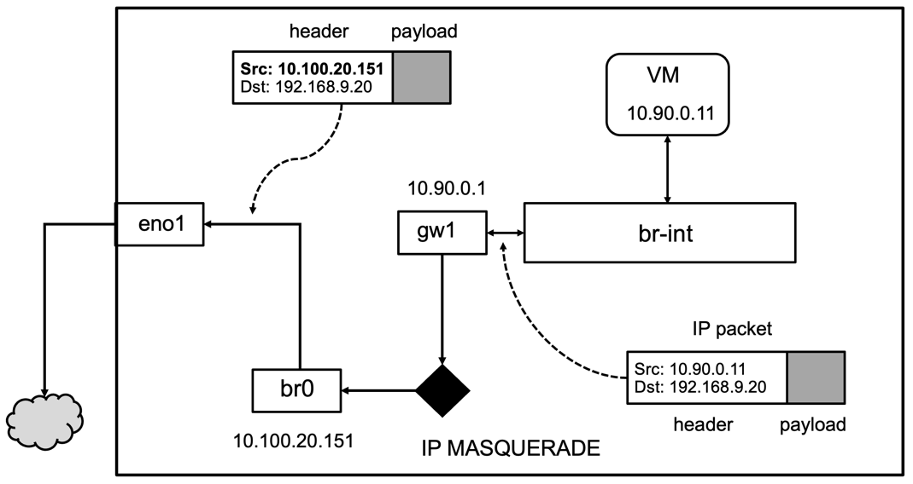
ภาพ 5-2 การสื่อสารข้อมูลระหว่างระบบเครือข่ายเสมือนและระบบเครือข่ายภายนอกโดยใช้ไอพีมาสควอเรด
เมื่อกำหนดค่าในวีเอ็มเสร็จ ผู้อ่านจะสามารถใช้คำสั่ง ping 10.90.0.1 จากวีเอ็มคอนโซลเพื่อ
ping เครื่องโฮสต์ได้
และในทางกลับกัน ผู้อ่านก็สามารถใช้คำสั่ง ping 10.90.0.11 จากคอมมานด์ไลน์ของโฮสต์เพื่อ
ping วีเอ็มได้เช่นเดียวกัน
หลังจากทดสอบแล้วว่าเครื่องโฮสต์และวีเอ็มสามารถสื่อสารกันได้แล้ว
ผู้อ่านสามารถใช้โปรแกรมเอสเอชเอชไคลเอนต์ (ssh client) บนเครื่องโฮสต์ล็อกอินทางไกลสู่เครื่องวีเอ็มได้
5.3 การสร้างและใช้งานเร้าเตอร์เสมือนด้วยไอพีมาสควอเรด
อุปกรณ์เครือข่ายเสมือนอันดับถัดไปที่ผู้เขียนจะกล่าวถึงคือซอฟต์แวร์เร้าเตอร์เสมือน
(virtual router) ซึ่งสามารถสร้างขึ้นได้โดยใช้กระบวนการไอพีมาสควอเรด (IP Masquerade)
ซึ่งเป็นกระบวนการเปลี่ยนแปลงค่าเฮดเดอร์ของไอพีแพคเกตแบบเอสแนต (SNAT) เนื่องจากกระบวนการนี้เป็นส่วนหนึ่งของลินุกซ์เคอเนิล
เครื่องคอมพิวเตอร์ที่ใช้ระบบลินุกซ์จึงสามารถจำลองการทำงานของอุปกรณ์เร้าเตอร์ด้วยซอฟต์แวร์ได้
กระบวนการไอพีมาสควอเรดจะแปลงค่าเฮดเดอร์ (Header) ของไอพีแพคเกต (IP Packet) ที่ถูกส่งมายังอินพุตเน็ตเวิร์คอินเตอร์เฟส (Input Network Interface) และส่งแพคเกตผลลัพธ์ออกสู่เอ้าต์พุตอินเตอร์เฟส (Output Interface)
กระบวนการไอพีมาสควอเรดหรือเร้าเตอร์เสมือนนี้ทำให้ผู้อ่านสามารถออกคำสั่งให้คอมพิวเตอร์ปฏิบัติงานเป็นเร้าเตอร์ได้
ในภาพที่ 5-2 ผู้เขียนจะสมมุติว่าเครื่องโฮสต์จะทำหน้าที่เป็นเร้าเตอร์ที่รับไอพีเพคเกตจากอินเตอร์เฟส
gw1 แล้วใช้กระบวนการไอพีมาสควอเรดแปลงไอพีแฮดเดอร์ของแพคเกตจากซับเน็ต
10.90.0.0/24 แบบเอสแนต (SNAT) แล้วส่งต่อแพคเกตออกสู่ระบบเครือข่ายภายนอกทางอินเตอร์เฟส
br0
ภาพ 5-2 แสดงตัวอย่างการของไอพีเพคเกตที่ถูกส่งออกมาจากวีเอ็มโดยสมมุติว่าวีเอ็มต้องการส่งแพคเกตไปยังเครื่องปลายทางที่มีค่าไอพีคือ
192.168.9.20 เนื่องจากวีเอ็มมีค่าไอพีแอดเดรสคือ
10.90.0.11 ไอพีแพคเกตที่ถูกส่งออกมาจากเครื่องวีเอ็มจะมีไอพีแฮดเดอร์ที่มีค่าไอพี
10.90.0.11
เป็นไอพีแอดเดรสของเครื่องต้นทางและ 192.168.9.20 เป็นค่าไอพีแอดเดรสปลายทาง
เมื่อแพคเกตถูกส่งต่อไปให้อินเตอร์เฟส gw1 และผ่านกระบวนการไอพีมาสควอเรดของลินุกซ์เคอร์เนิลแล้ว
ค่าเฮดเดอร์ของไอพีแพคเกตจะถูกเปลี่ยนด้วยวิธีการเอสแนต
ทำให้ไอพีแพคเกตที่ถูกส่งออกจากอินเตอร์เฟส br0 มีค่าไอพีของเครื่องต้นทางเปลี่ยนไปเป็นไอพีของเครื่องโฮสต์คือ
10.100.20.151 แทนดังภาพ
ผู้อ่านสามารถศึกษารายละเอียดของกระบวนการแอสเนตโดยใช้ไอพีมาสควอเรดเพิ่มเติมได้ที่
ในการสร้างและใช้งานเร้าเตอร์เสมือน
ผู้อ่านจะต้องทำดังนี้
1. ผู้อ่านจะต้องกำหนดให้โฮสต์เคอเนิลสามารถส่งต่อแพคเกตได้ โดยกำหนดค่าให้ net.ipv4.ip_forward = 1
2. ผู้อ่านต้องติดตั้งซอฟต์แวร์ยูเอฟดับบลิว (ufw) เพื่อจัดการไฟร์วอล ออกคำสั่ง enable ufw และกำหนดนโยบายไฟร์วอลให้ DEFAULT_FORWARD_POLICY="ACCEPT"
$ sudo nano /etc/sysctl.conf...เปลี่ยนบรรทัดนี้ดังข้างล่าง net.ipv4.ip_forward = 1 ...save ไฟล์ $ sudo sysctl -p $ sudo apt install ufw$ sudo ufw statusStatus: inactive$ sudo ufw allow ssh $ sudo ufw enable$$ sudo vi /etc/default/ufw... เปลี่ยนค่า DEFAULT_FORWARD_POLICY ให้เป็นข้างล่าง DEFAULT_FORWARD_POLICY="ACCEPT"......save ไฟล์ $ |
3. ผู้ใช้ต้องกำหนดกฏไฟร์วอลสำหรับแปลงค่าไอพีแฮดเดอร์แบบเอสแนตด้วยกระบวนการไอพีมาสควอเรดของโฮสต์เคอเนิล โดยกำหนดค่าในไฟล์ /etc/ufw/before.rules
ดังนี้
a.
กำหนดให้ ACCEPT แพคเกจขาออก (หลังจากการเร้าติ้งของเคอร์เนิล) เข้าพิจารณาตามกฎในตาราง POSTROUTING
b. รับแพคเกตที่ส่งมาจากซับเน็ต 10.90.0.0/24 มาแปลงแพคเกตแบบ
SNAT
ด้วยกระบวนการไอพีมาสควอเรด
c.
ขอให้ผู้อ่านสังเกตว่าต้องมีบรรทัดที่มีคำสั่ง
COMMIT
หลังกฎ
POSTROUTING
$ sudo nano /etc/ufw/before.rules## rules.before## Rules that should be run before the ufw command line added rules. Custom# rules should be added to one of these chains:# ufw-before-input# ufw-before-output# ufw-before-forward## nat IP masquerade table*nat:POSTROUTING ACCEPT [0:0] #Forward packets from the local network to br0-A POSTROUTING -s 10.90.0.0/24 -o br0 -j MASQUERADECOMMIT#Don't delete these required lines, otherwise there will be errors*filter…save ไฟล์ |
4. หลังจากนั้น
ให้ยกเลิกการใช้งานไฟร์วอล และออกคำสั่งแอคติเวทไฟร์วอลอีกครั้งหนึ่ง ยูดับบิวเอฟจะอ่านกฎไฟร์วอลใหม่ที่ผู้อ่านกำหนดมาใช้งาน
$ sudo ufw disable $ sudo ufw enable |
เมื่อเสร็จขั้นตอนข้างต้น
ผู้อ่านได้สร้างเร้าเตอร์เสมือนที่เชื่อมต่อระบบเครือข่ายที่มีค่าซับเน็ต 10.90.0.0/24 กับระบบเครือข่ายภายนอก
ผู้อ่านสามารถล็อกอินเข้าสู่เครื่องวีเอ็มที่สร้างขึ้นในหัวข้อ 5.2 (ที่มีค่าไอพี 10.90.0.11) และ ping คอมพิวเตอร์ที่อยูในระบบเครือข่ายภายนอกหรือระบบเครือข่ายอินเตอร์เน็ต
(ถ้าระบบเครือข่ายภายนอกสื่อสารกับระบบอินเตอร์เน็ตได้)
5.4 การเชื่อมต่อเครื่องโฮสต์เข้ากับซอฟต์แวร์สวิตช์แบบโอเพนวีสวิตช์
นับตั้งแต่หัวข้อ 5.4 นี้เป็นต้นไป ผู้เขียนจะสมมุติว่าได้ชัตดาวน์วีเอ็ม vm.sh ที่สร้างขึ้นในหัวข้อ
5.2 และเริ่มสร้างวีเอ็มชุดใหม่
ได้แก่ vm1.sh vm2.sh vm3.sh และ vm4.sh ซึ่งผู้เขียนจะใช้ประกอบคำบรรยายตั้งแต่หัวข้อนี้เป็นต้นไป
ในการสร้างและรันวีเอ็มเหล่านี้
ผู้เขียนสมมุติด้วยว่ามีเครื่องโฮสต์คอมพิวเตอร์สองเครื่องได้แก่
host1 และ host2 ซึ่งผู้เขียนแนะนำให้ใช้เครื่องที่มีสเปคซิฟิเคชันขั้นต่ำดังนี้
1.
ซีพียูคอร์อย่างต่ำสองซีพียูคอร์
2.
มีขนาดของหน่วยความจำอย่างน้อย 4 GB
และ
3.
หน่วยเก็บข้อมูลขนาด 20 GB ขึ้นไป
4.
มีเน็ตเวอร์อินเตอร์เฟสการ์ดสองอินเตอร์เฟส
กำหนดให้ทั้งสองเครื่องมีโฮสต์โอเอสคือ
Ubuntu 20.04 server และ host1 มีไอพีแอดเดรสคือ 10.100.20.151 และ host2 มีไอพีแอดเดรสคือ
10.100.20.152 และบนเครื่อง host1 ไฟลต์สคริปต์และอิมเมจสำหรับสร้างและรันวีเอ็มถูกจัดเก็บในไดเรกทอรี่ต่อไปนี้
· ไดเรกตอรี่
/srv/kasidit/bookhosts/etc
เก็บสคริปไฟล์สำหรับเชื่อมต่อและยกเลิกการเชื่อมต่อแทบอินเตอร์เฟสเข้ากับสวิตช์เสมือน br-int
ได้แก่ ไฟล์ ovs-ifup
และ
ovs-ifdown
ซึ่งผู้เขียนกำหนดให้มีค่าเพอมิสชันแฟลก (Permission flag) เท่ากับ 755 (ฐานแปด) เพื่อให้สคริปต์ประมวลผลได้ เนื้อหาของไฟล์ทั้งสองมีดังนี้
On host1: $ cd /srv/kasidit/bookhosts/etc$ $ lsovs-ifdown ovs-ifup$ cat ovs-ifup#!/bin/sh switch='br-int'/usr/sbin/ifconfig $1 0.0.0.0 up/usr/bin/ovs-vsctl add-port ${switch} $1$ cat ovs-ifdown#!/bin/sh switch='br-int'/usr/sbin/ifconfig $1 0.0.0.0 down/usr/bin/ovs-vsctl del-port ${switch} $1$ |
· ไดเรกทอรี่
/srv/kasidit/bookhosts/images
เก็บไฟล์ดิสค์อิมเมจของวีเอ็มได้แก่ไฟล์ vm1.img
ซึ่งเป็นไฟล์
ที่มีฟอร์แมตแบบ qcow2 และสมมุติว่าผู้เขียนได้ติดตั้ง
Ubuntu
20.04 server เป็นเกสท์โอเอสเรียบร้อยแล้ว
· ไดเรกทอรี่
/srv/kasidit/bookhosts/scripts
เก็บสคริปต์สำหรับเรียกวีเอ็มขึ้นมาประมวลผลบนเครื่องโฮสต์ ซึ่งสคริปต์สำหรับสร้างและรันวีเอ็ม vm1 คือ vm1.sh ซึ่งมีเนื้อหาดังนี้
On host1: $ cd /srv/kasidit/bookhosts/scripts$ cat vm1.sh#!/bin/bash numsmp="1" memsize="1G"etcloc=/srv/kasidit/bookhosts/etcimgloc=/srv/kasidit/bookhosts/images/imgfile="vm1.img"#exeloc="/usr/bin"#sudo ${exeloc}/qemu-system-x86_64 \ -enable-kvm \ -cpu host,kvm=off \ -smp ${numsmp} \ -m ${memsize} \ -drive file=${imgloc}/${imgfile},format=qcow2 \ -boot c \ -vnc :11 \ -qmp tcp::9111,server,nowait \ -monitor tcp::9112,server,nowait \ -netdev type=tap,script=${etcloc}/ovs-ifup,downscript=${etcloc}/ovs-ifdown,id=hostnet1 \ -device virtio-net-pci,romfile=,netdev=hostnet1,mac=00:81:50:b0:01:94 \ -rtc base=localtime,clock=vm $ |
ในอันดับถัดไป
ผู้เขียนจะเปลี่ยนสรรพนามให้ผู้อ่านเป็นผู้ปฏิบัติ
หลังจากเตรียมไฟล์ต่างๆข้างต้นเรียบร้อยแล้ว ผู้อ่านจะรัน vm1 บนเครื่องโฮสต์ด้วยคำสั่ง
$ cd /srv/kasidit/bookhosts/scripts$ ./vm1.sh & |
ในภาพที่ 5-3
ผู้อ่านจะเห็นว่าบนเครื่อง
host1 เราได้สร้างสวิตช์เสมือน br-int ที่เชื่อมต่อกับเร้าเตอร์เสมือนด้วยอินเตอร์เฟส gw1 และได้สร้างวีเอ็ม vm1 เชื่อมต่อกับสวิตช์ br-int เรียบร้อยแล้ว
ในอันดับถัดไปผู้อ่านจะเชื่อมต่อเน็ตเวิร์คอินเตอร์เฟสจริงของเครื่อง host1 เข้ากับ br-int และจะแสดงว่าวีเอ็มสามารถสื่อสารกับโฮสต์เครื่องอื่นผ่านการเชื่อมต่อนี้ได้
เรากำหนดให้เครื่องโฮสต์แต่ละเครื่องมีเน็ตเวิร์คอินเตอร์เฟส
2 อินเตอร์เฟสได้แก่ eno1 และ enp68s0f0 และกำหนดให้ eno1 ของแต่ละเครื่องเชื่อมต่อกับระบบเครือข่ายที่สามารถติดต่ออินเตอร์เน็ตได้
และกำหนดให้อินเตอร์เฟส enp68s0f0 ของโฮสต์แต่ละเครื่องจะเชื่อมต่อกับระบบเครือข่ายที่เชื่อมต่อกับระบบเครือข่ายภายในที่จัดเตรียมไว้เพื่อเชื่อมต่อเครื่องโฮสต์เพียงสองเครื่องนี้เท่านั้น
ในภาพกำหนดให้เครื่อง
host1
มีเน็ตเวิร์คอินเตอร์เฟส enp68s0f0 เชื่อมต่อกับระบบเครือข่ายและเครื่อง
host2 มีเน็ตเวิร์คอินเตอร์เฟส enp68s0f0 เชื่อมต่อกับระบบเครือข่ายเดียวกัน เพื่อตรวจสอบว่าเครื่องทั้งสองสามารถสื่อสารกันผ่านอินเตอร์เฟสเหล่านี้ได้
ผู้อ่านจะใช้คำสั่งต่อไปนี้เพื่อกำหนดให้ enp68s0f0 บนเครื่อง host1 มีค่า IP address คือ 10.0.0.10
On host1: $ sudo ip address add 10.0.0.10/24 dev enp68s0f0$ sudo ip link set ens68s0f0 up |
ภาพที่ 5-3 แสดงโครงสร้างของเครื่องโฮสต์และการเชื่อมต่อบนสวิตช์
br-int
และใช้คำสั่งข้างล่างบนเครื่อง host2 เพื่อกำหนดให้ enp68s0f0 บนเครื่อง host2
มีค่า IP address คือ 10.0.0.11 หลังจากนั้นให้ ping ไอพีแอดแดรสทั้งสองข้ามเครื่อง
On host2: $ sudo ip address add 10.0.0.11/24 dev enp68s0f0 $ sudo ip link set ens68s0f0 up |
ในภาพ
5-4 ผู้อ่านจะใช้คำสั่งต่อไปนี้เพื่อเชื่อมต่ออินเตอร์เฟส enp68s0f0 บนเครื่อง host1 เข้ากับ br-int
On host1: $ $ sudo ovs-vsctl add-port br-int enp68s0f0 |
ผู้อ่านสามารถตรวจสอบโครงสร้างการเชื่อมต่อของซอฟต์แวร์สวิตช์ br-int ด้วยคำสั่ง ovs-vsctl show
On host1: $ sudo ovs-vsctl show... Bridge br-int Port "gw1" Interface "gw1" type: internal Port "tap0" Interface "tap0" Port enp68s0f0 Interface enp68s0f0 Port br-int Interface br-int type: internal …$ |
ภาพที่ 5-4 การเชื่อมต่อจากเครื่องโฮสต์
host2 ไปยัง br-int
เมื่อ add enp68s0f0 เข้ากับ br-int
แล้ว ผู้อ่านจะไม่สามารถ ping 10.0.0.10 จากเครื่อง host2 ได้เนื่องจากอินเตอร์เฟส enp68s0f0 บนเครื่อง host1 ได้กลายเป็น port หนึ่งของ br-int แล้ว ดังนั้น ping
packet จาก host2 จะถูก forward ไปที่ br-int แทนที่จะส่งไปให้โอเอสเคอร์เนิลของเครื่อง host1
ในภาพที่ 5-4 เพื่อให้ ผู้อ่านสามารถส่งข้อมูลจากเครื่อง host2 (ผ่าน enp68s0f0) มายังเครื่อง host1 และส่งข้อมูลจากเครื่อง host1 มายัง host2 ได้ ผู้อ่านจะต้องสร้างอินเตอร์เฟสภายในขึ้นหนึ่งอินเตอร์เฟสชื่อว่า
xif1
บนเครื่อง host1 เชื่อมต่ออินเตอร์เฟสนี้เข้ากับ br-int และกำหนดให้ xif1 มีค่าไอพีแอดแดรสเป็น 10.0.0.10/24 โดยใช้คำสั่งต่อไปนี้
On host1:$ sudo ip address del 10.0.0.10/24 dev enp68s0f0$ sudo ovs-vsctl add-port br-int xif1 -- set interface xif1 type=internal$ sudo ip address add 10.0.0.10/24 dev xif1$ sudo ifconfig xif1 up |
การเพิ่มอินเตอร์เฟสและกำหนดค่าไอพีแอดเดรสข้างต้นส่งผลให้
เมื่อผู้อ่านออกคำสั่ง ping
10.0.0.10 แพคเกตจากเครื่อง
host2
จะถูกส่งไปที่ br-int และถูกส่งต่อไปที่ xif1 ในที่สุด
On host2: $ ping -c 1 10.0.0.10PING 10.0.0.10 (10.0.0.10) 56(84) bytes of data.64 bytes from 10.0.0.10: icmp_seq=1 ttl=64 time=0.745 ms … |
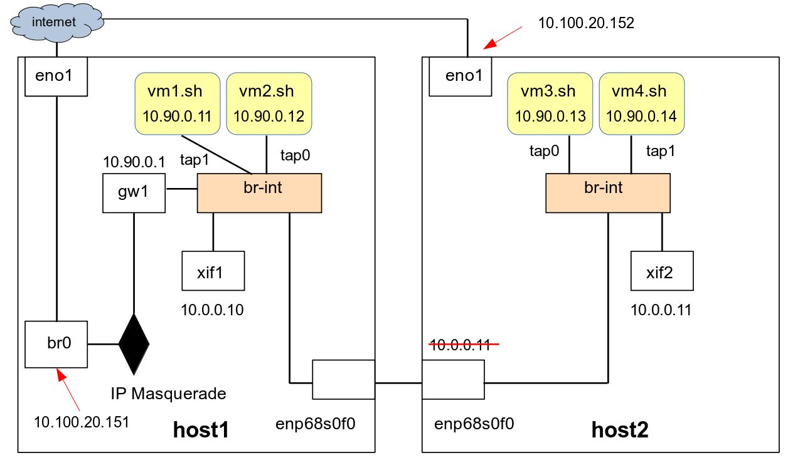
ภาพที่ 5-5 การสร้างระบบเครือข่ายเสมือนโดยเชื่อมต่อ
br-int ของเครื่อง host1 และ host2 เข้าด้วยกัน
5.5 การเชื่อมต่อสวิตช์เสมือนข้ามเครื่องโฮสต์เพื่อขยายระบบเครือข่ายเสมือน
ซอฟต์แวร์สวิตช์เป็นส่วนประกอบพื้นฐานสำหรับการสร้างและเพิ่มขยายระบบเครือข่ายเสมือน
เช่นเดียวกับในระบบเครือข่ายแลน (LAN) ทั่วไปที่ประกอบไปด้วยการเชื่อมต่อของอุปกรณ์ฮาร์ดแวร์เน็ตเวิร์คสวิตช์แบบเลเยอร์สอง
(Layer 2) และเน็ตเวิร์คสวิตช์แบบเลเยอร์สาม
(Layer 3) จำนวนหนึ่ง เมื่อมีความต้องการเพิ่มขนาดของแลนก็ต้องเพิ่มจำนวนอุปกรณ์สวิตช์
และเชื่อมต่อสวิตช์เหล่านั้นเข้าด้วยกันด้วยสายเคเบิ้ล
เช่นเดียวกันเมื่อผู้เขียนต้องการเพิ่มขยายระบบเครือข่ายเสมือน
ผู้เขียนสามารถเพิ่มจำนวนโฮสต์คอมพิวเตอร์เพื่อรันวีเอ็มและเชื่อมต่อซอฟต์แวร์สวิตช์บนโฮสต์เครื่องใหม่กับสวิตช์ที่มีอยู่
ภาพที่ 5-5 แสดงการสร้างวีเอ็ม 2 เครื่องได้แก่ vm1.sh และ vm2.sh
ให้เชื่อมต่อกับซอฟต์แวร์สวิตช์ br-int บนเครื่องโฮสต์ host1 และสร้าง vm3.sh
และ vm4.sh เข้ากับซอฟต์แวร์สวิตช์
br-int
บนเครื่อง host2 ซึ่ง br-int
ของเครื่องทั้งสองจะเชื่อมต่อเข้าด้วยกันผ่านอินเตอร์เฟส
enp68s0f0
ของเครื่องโฮสต์ทั้งสองเครื่อง
5.5.1
การเตรียมไฟล์อิมเมจสำหรับรันวีเอ็มบนเครื่องโฮสต์หลายเครื่อง
ก่อนที่จะรันวีเอ็มสี่เครื่องบนโฮสต์ทั้งสองในภาพที่ 5-5 ได้
ผู้เขียนจะต้องเตรียมไฟล์อิมเมจสำหรับวีเอ็มทั้งสี่ ถ้าหากผู้เขียนใช้วิธีติดตั้งเกสท์โอเอสบนไฟล์อิมเมจแต่ละเครื่องแยกกันดังที่เคยบรรยายไปแล้วในบทที่
4 ก็จะเป็นการเสียเวลามาก
ในกรณีที่วีเอ็มมีไฟล์อิมเมจที่ได้รับการติดตั้งเกสท์โอเอสเรียบร้อยแล้ว
วิธีการที่สะดวกและรวดเร็วกว่าคือการทำสำเนาไฟล์วีเอ็มอิมเมจข้ามเครื่องเช่น
ถ้ามีไฟล์อิมเมจที่มี Ubuntu 20.04 เป็นเกสท์โอเอสบนโฮสต์เครื่องหนึ่งอยู่แล้วและผู้เขียนต้องการรันวีเอ็มแบบเดียวกันบนโฮสต์อีกเครื่องหนึ่ง
ผู้เขียนก็สามารถถ่ายโอนข้อมูลจากโฮสต์แรกและสร้างสำเนาของไฟล์อิมเมจนั้นบนโฮสต์เครื่องใหม่ได้แล้วหลังจากนั้นจึงเปลี่ยนค่ารายละเอียดของไฟล์อิมเมจบนโฮสต์เครื่องใหม่เพื่อให้เหมาะสมกับวีเอ็มใหม่ที่จะรัน
แต่อย่างไรก็ตามวิธีนี้ก็อาจมีประสิทธิภาพน้อยเพราะการทำสำเนาอิมเมจไฟล์จากอิมเมจต้นฉบับบนโฮสต์เดิมให้กับแต่ละวีเอ็มที่จะรันบนโฮสต์ใหม่ต้องใช้เนื้อที่ของหน่วยเก็บข้อมูลมาก
เป็นการสิ้นเปลืองแบนด์วิธของระบบเครือข่าย
และต้องใช้ซีพียูสำหรับการทำสำเนาข้อมูล
ดังนั้นวิธีการที่ดีกว่าคือ ผู้เขียนถ่ายโอนไฟล์ Ubuntu 20.04 อิมเมจและทำสำเนาบนเครื่องโฮสต์ใหม่ครั้งเดียว
แล้วหลังจากนั้นก็สร้างโอเวอร์เลย์ (overlayed) qcow2 อิมเมจ หนึ่ง โอเวอร์เลย์ อิมเมจต่อหนึ่งวีเอ็มบนเครื่องโฮสต์ใหม่
ภาพ 5-6 ไฟล์อิมเมจแบบ qcow2 โอเวอร์เลย์
สำหรับวีเอ็มบนเครื่องโฮสต์ทั้งสอง
โดยหลักการแล้ว
เราจะทำสำเนาหลักของไฟล์อิมเมจขนาดใหญ่หนึ่งอิมเมจต่อหนึ่งโฮสต์แล้วหลังจากนั้นจะสร้างอิมเมจแบบ
โอเวอร์เลย์ สำหรับแต่ละวีเอ็มบนโฮสต์แต่ละเครื่อง ภาพที่ 5-6 แสดงตัวอย่างของไฟล์อิมเมจ vm1.sh ซึ่งมีเนื้อหาของ ubuntu 20.04 จริงอยู่
ไฟล์นี้จะถูกทำให้เป็น base โอเวอร์เลย์ image ซึ่งจะไม่มีการเปลี่ยนแปลงค่า และจะมีการสร้าง ไฟล์แบบ โอเวอร์เลย์
image ที่อ้างอิง vm1.img คือ vm1.ovl และ vm2.ovl เพื่อรองรับการประมวลผลของ วีเอ็ม vm1.sh
และ vm2.sh ตามลำดับ
เวลาที่ต้องการประมวลผลวีเอ็มแบบเดียวกันนี้บนเครื่องโฮสต์อื่น เช่น host2 ในภาพ ผู้เขียนก็เพียงแค่ทำสำเนาของ vm1.img เพียงไฟล์เดียวไปยังเครื่องโฮสต์เครื่องนั้น
และใช้ไฟล์นั้นเป็น base โอเวอร์เลย์ image ของเครื่องปลายทาง เมื่อผู้เขียนต้องการประมวลผล vm3.sh และ vm4.sh บนเครื่อง host2 ผู้เขียนก็จะสร้างไฟล์
vm3.ovl และ vm4.ovl เป็น โอเวอร์เลย์
image ที่มี base image คือ vm1.img ดังภาพ
ในการสร้างอิมเมจดังภาพที่ 5-6 เพื่อรองรับการประมวลผลแบบกระจายของวีเอ็มบนเครื่องโฮสต์สองเครื่องในภาพที่
5-5 ก่อนที่จะสร้างโอเวอร์เลย์อิมเมจหากมีวีเอ็มใช้งานเบสอิมเมจได้แก่
vm1.img และ vm2.img โดยตรง
(ไม่ผ่านโอเวอร์เลย์) ผู้อ่านจะต้อง shutdownวีเอ็มเหล่านั้นก่อน
แต่ถ้ามีวีเอ็มที่ใช้งานโอเวอร์เลย์อิมเมจที่มี vm1.img หรือ vm2.img เป็นเบสอิมเมจ ก็ไม่จำเป็นต้องปิดวีเอ็มนั้น สาเหตุที่ต้องปิดวีเอ็มนั้นเนื่องจากถ้าวีเอ็มกำลังใช้งานเบสอิมเมจอยู่ข้อมูลบางอย่างอาจไม่ถูกเขียนลงในอิมเมจจริงแต่ถูกเก็บอยู่ในหน่วยความจำของวีเอ็มแทน
ดังนั้นเนื้อหาในเมทาดาตาของระบบไฟล์กับเนื้อหาของข้อมูลจริงที่เก็บอยู่ในดิสค์อิมเมจอาจไม่สอดคล้องกัน
การสร้างไฟล์โอเวอร์เลย์บนดิสค์อิมเมจที่ไม่เสถียรเช่นนั้นอาจทำให้เกสท์โอเอสของวีเอ็มที่ใช้งานโอเวอร์เลย์อิมเมจเกิดความผิดพลาดในการประมวลผลได้
หลังจากที่พร้อมจะสร้างโอเวอร์เลย์อิมเมจแล้ว ผู้อ่านจะใช้คำสั่งต่อไปนี้เพื่อสร้างไฟล์ดิสค์อิมเมจแบบโอเวอร์เลย์สำหรับ
vm1 และ vm2 บนเครื่อง host1
On host1: $ cd /srv/kasidit/bookhosts/images$ qemu-img create -f qcow2 -b vm1.img vm1.ovl$ qemu-img create -f qcow2 -b vm1.img vm2.ovl |
ในคำสั่งข้างต้น ผู้อ่านได้สร้างไฟล์อิมเมจชนิด qcow2 แบบโอเวอร์เลย์ ขึ้นสองไฟล์คือ vm1.ovl และ vm2.ovl ซึ่งมี base file หรือไฟล์อ้างอิงคือ vm1.img
5.5.2
การเตรียมสคริปต์เพื่อรันวีเอ็ม vm2
บนเครื่อง host1
ในอันดับถัดไป ผู้อ่านจะต้องทำสำเนาของไฟล์สคริปต์ vm1.sh ที่มีอยู่แต่เดิมไปที่ไฟล์
vm2.sh บนเครื่อง host1 และเปลี่ยนแปลงเนื้อหาของ
vm1.sh
โดย เปลี่ยนอิมเมจไฟล์ที่ใช้จาก vm1.img ให้เป็น vm1.ovl
On host1:$ cd ../scripts $ cp vm1.sh vm2.sh$ vi vm1.sh $ cat vm1.sh#!/bin/bash numsmp="1" memsize="1G"etcloc=/srv/kasidit/bookhosts/etcimgloc=/srv/kasidit/bookhosts/images/imgfile="vm1.ovl"#exeloc="/usr/bin"#sudo ${exeloc}/qemu-system-x86_64 \ -enable-kvm \ -cpu host,kvm=off \ -smp ${numsmp} \ -m ${memsize} \ -drive file=${imgloc}/${imgfile},format=qcow2 -boot c \ -vnc :11 \ -qmp tcp::9111,server,nowait \ -monitor tcp::9112,server,nowait \ -netdev type=tap,script=${etcloc}/ovs-ifup,downscript=${etcloc}/ovs-ifdown,id=hostnet1 \ -device virtio-net-pci,romfile=,netdev=hostnet1,mac=00:81:50:b0:01:94 \ -rtc base=localtime,clock=vm $ |
ในสคริปต์ไฟล์ vm2.sh ผู้อ่านจะเปลี่ยนแปลงข้อความดังต่อไปนี้
- เปลี่ยนชื่ออิมเมจไฟล์จาก vm1.img ให้เป็น vm2.ovl
- เปลี่ยน vnc server port ของวีเอ็มให้เป็น "-vnc
:12" หรือ 5912
(ได้มาจาก 5900+12)
เนื่องจากพอรต์ 5911 (5900+11) หรือ :11
ถูกใช้โดย vm1.sh แล้ว
- เปลี่ยนค่า port ที่จะใช้ส่งคำสั่งแบบ QMP ของ qemu-kvm
ให้ไม่เหมือนกับของวีเอ็มอื่น (tcp:9121)
- เปลี่ยนค่า port ที่จะใช้ออกคำสั่งแบบ Qemu Monitor ให้ไม่เหมือนกับของวีเอ็มอื่น (tcp:9122)
- เปลี่ยน MAC address ของ tap
เน็ตเวิร์คอินเตอร์เฟสที่วีเอ็มจะใช้เชื่อมต่อกับเครือข่ายเสมือนให้ไม่ซ้ำกับของวีเอ็มอื่น
ที่ได้รับการเชื่อมต่อเข้ากับระบบเครือข่ายเสมือนเดียวกัน โดยเปลี่ยนค่าเป็น 00:81:50:b0:02:94
On host1: $ vi vm2.sh $ cat vm2.sh#!/bin/bash numsmp="1" memsize="1G"etcloc=/srv/kasidit/bookhosts/etcimgloc=/srv/kasidit/bookhosts/images/imgfile="vm2.ovl"#exeloc="/usr/bin"#sudo ${exeloc}/qemu-system-x86_64 \ -enable-kvm \ -cpu host,kvm=off \ -smp ${numsmp} \ -m ${memsize} \ -drive file=${imgloc}/${imgfile},format=qcow2 \ -boot c \ -vnc :12 \ -qmp tcp::9121,server,nowait \ -monitor tcp::9122,server,nowait \ -netdev type=tap,script=${etcloc}/ovs-ifup,downscript=${etcloc}/ovs-ifdown,id=hostnet1 \ -device virtio-net-pci,romfile=,netdev=hostnet1,mac=00:81:50:b0:02:94 \ -rtc base=localtime,clock=vm $ |
ขอให้ผู้อ่านสังเกตว่าที่ผ่านมาผู้อ่านเพียงแค่เตรียมไฟล์อิมเมจและสคริปต์ไฟล์ให้พร้อมสำหรับการประมวลผลเท่านั้นและยังไม่ได้ออกคำสั่งรันวีเอ็มใดๆทั้งสิ้น
5.5.3
การกำหนดค่าและเข้าใช้งาน vm2.sh
ในการรัน vm2.sh ผู้อ่านจะต้องล็อกอินเข้าสู่
vm2 และเปลี่ยนค่าไอพีแอดรสจากค่าเดิม (10.90.0.11) ที่ได้รับมาจากการอ้างอิงไฟล์ vm1.img เป็น base
image ให้เป็นค่าใหม่คือ 10.90.0.12 รวมทั้งเปลี่ยนชื่อเครื่อง
และค่าในไฟล์ /etc/hosts ด้วย
แต่เนื่องจาก vm1 ยังรันอยู่ หากรัน vm2 จะทำให้ทั้งสองวีเอ็มมีไอพีแอดเดรสที่ซ้ำกัน
(ซึ่งสามารถทำได้ถ้าผู้อ่านจะใช้วีเอ็นซีล็อกอินเข้าเปลี่ยนค่าไอพีของ vm2 อย่างรวดเร็ว) เพื่อป้องกันความสับสน
เราจะ shutdown
เครื่อง vm1.sh ก่อน การ shutdown นั้นทำได้หลายวิธี ผู้เขียนจะแนะนำให้ใช้วิธีที่ปลอดภัยสำหรับวีเอ็มมากที่สุดคือการล็อกอินเข้าใช้งาน
vm1 ผ่าน VNC client หรือ ssh เข้าสู่ 10.90.0.11 จากเครื่อง
host1 (ซึ่งสามารถทำได้เพราะบนเครื่อง host1 มีอินเตอร์เฟส gw1 ที่มีไอพีแอดเดรสคือ 10.90.0.1)
และใช้คำสั่ง poweroff จากคอมมานด์ไลน์เชลล์เพื่อปิดเครื่อง
On vm1: $ sudo poweroff |
หลังจากนั้นผู้อ่านจะรัน
vm2.sh
ด้วยคำสั่ง
On host1: $ cd /srv/kasidit/bookhosts/scripts$ ./vm2.sh & |
เมื่อเสร็จแล้ว
ผู้อ่านจะสามารถล้อกอินเข้าสู่ vm2 ได้หลายวิธี
วิธีหนึ่งคือการใช้ vnc
client เพื่อเข้าใช้งานคอนโซลของ
vm2 (ที่คิวอีมูไฮเปอร์ไวเซอร์มีบริการให้)
แล้วล้อกอินเข้าสู่วีเอ็ม
เนื่องจากการ vm1 และ vm2 มีวีเอ็นซีเซิร์ฟเวอร์เปิดให้บริการที่พอร์ต
5911 และ 5912 บนเครื่อง host1 ผู้เขียนจึงต้องใช้คำสั่งต่อไปนี้เพื่อเปิดไฟร์วอลสำหรับพอร์ตเหล่านั้นดังนี้
On host1: $ sudo ufw allow 5911 $ sudo ufw allow 5912 |
อีกวิธีหนึ่งคือ การเข้าถึง vm2 โดยใช้ ssh ไปที่ 10.90.0.11
เหมือนเข้าใช้งาน vm1 เพราะผู้อ่านเพิ่ง ทำสำเนาทุกอย่างของ vm2 มาจาก vm1
จึงสามารถใช้ไอพีแอดเดรสของ vm1 เพื่อล้อกอินเพื่อกำหนดค่าของ vm2 ได้
แต่ในกรณีนี้ผู้อ่านต้องพึงระวังว่าวิธีนี้ใช้ได้เมื่อ vm1 ถูกปิดไปแล้วเท่านั้น ไม่ว่าจะเป็นวิธีใดก็ตาม
สมมุติว่าผู้อ่านได้ล้อกอินเข้าสู่เครื่อง vm2 แล้วและจะได้กำหนดค่าของ vm2 ดังนี้
On vm2: $ sudo vi /etc/hostname$ cat /etc/hostnamevm2$ sudo vi /etc/hosts$ cat /etc/hosts127.0.0.1 localhost127.0.1.1 vm2...$ cat /etc/netplan/00-installer-config.yaml...network: ethernets: ens3: addresses: - 10.90.0.11/24 gateway4: 10.90.0.1 nameservers: addresses: - 8.8.8.8 search: - tu.ac.th version: 2$$ cat /etc/netplan/00-installer-config.yaml | grep 10.90.0.11 - 10.90.0.11/24$ sudo sed -i "s/10.90.0.11/10.90.0.12/g" /etc/netplan/00-installer-config.yaml$ cat /etc/netplan/00-installer-config.yaml | grep 10.90.0.12 - 10.90.0.12/24$ sudo reboot |
จากชุดคำสั่งข้างต้น
ผู้อ่านได้ทำสิ่งต่อไปนี้
· เปลี่ยนชื่อวีเอ็มให้เป็น
vm2
· เปลี่ยนค่าใน
/etc/hosts
ให้สามารถแปลงชื่อ
vm2
เป็น
127.0.1.1
ได้
· ใช้โปรแกรม
sed
เปลี่ยนค่าไอพีแอดเดรสในไฟล์
/etc/netplan/00-installer-config.yaml จาก
10.90.0.11
ให้เป็น
10.90.0.12
· และ reboot
(ผู้เขียนแนะนำให้
reboot
เพราะมีการเปลี่ยนค่าทั้ง
hostname
และไอพีแอดเดรส
ถ้าผู้อ่านไม่ต้องการรีบูทเครื่องก็ต้องใช้คำสั่ง systemctl เปลี่ยนชื่อ
และใช้ netplan
apply เพื่อเปลี่ยนค่าไอพีแอดเดรสของเครื่อง)
ในอันดับถัดไป
ผู้อ่านจะรัน vm1.sh
เพิ่มบนเครื่อง host1 เพื่อให้มีทั้ง vm1.sh
และ vm2.sh รันอยู่บน host1 ดังภาพที่ 5-5 ขอให้ผู้อ่านสังเกตุว่าวีเอ็มทั้งสองได้สร้างแทบอินเตอร์เฟส
tap1
และ tap0 เพื่อเชื่อมต่อ vm1 และ vm2 กับ br-int สวิตช์ตามลำดับ ผู้อ่านสามารถใช้คำสั่ง ovs-vsctl เพื่อดูสถานะการเชื่อมต่อนั้นได้ดังนี้
On host1: $ cd /srv/kasidit/bookhosts/scripts$ ./vm1.sh &$ sudo ovs-vsctl show... Bridge br-int Port gw1 Interface gw1 type: internal Port xif1 Interface xif1 type: internal Port tap0 Interface tap0 Port enp68s0f0 Interface enp68s0f0 Port tap1 Interface tap1 Port br-int Interface br-int type: internal... ovs_version: "2.13.1"$ |
5.5.4
การเตรียมอิมเมจและสคริปต์บนเครื่อง host2
ในหัวข้อนี้ ผู้อ่านจะสร้าง vm3.sh และ
vm4.sh พร้อมทั้งสร้างระบบเครือข่ายเสมือนบนเครื่อง
host2 ในอันดับแรก
ผู้อ่านจะล้อกอินเข้าเครื่อง host2 เพื่อสร้างไดเรกทอรี่
/srv/kasidit/bookhosts และสร้างไดเรกทอรี่ย่อยได้แก่
etc images และ script ภายใต้ไดเรกทอรี่นั้น
เมื่อเสร็จแล้ว ผู้อ่านจะล็อกอินเข้าเครื่อง
host1
เพื่อทำการถ่ายโอนไฟล์ vm1.img จากเครื่อง host1
ไปยัง host2 และทำสำเนาไฟล์สคริปต์ vm1.sh
จาก host1 ไปที่ host2 พร้อมทั้งเปลี่ยนชื่อไฟล์บนเครื่องปลายทางเป็น
vm3.sh โดยใช้คำสั่งต่อไปนี้
On host1: $ cd /srv/kasidit/bookhosts$ scp etc/\* 10.100.20.152:/srv/kasidit/bookhosts/etc$ scp images/vm1.img 10.100.20.152:/srv/kasidit/bookhosts/images/vm1.img$ scp scripts/vm1.sh 10.100.20.152:/srv/kasidit/bookhosts/scripts/vm3.sh |
ในอันดับถัดไปผู้อ่านล็อกอินเข้าเครื่อง
host2
เพื่อสร้าง โอเวอร์เลย์อิมเมจแบบ qcow2 สำหรับ
vm3 และ vm4 ดังแสดงในภาพ
5-6
On host2: $ cd /srv/kasidit/bookhosts/images$ qemu-img create -f qcow2 -b vm1.img vm3.ovl$ qemu-img create -f qcow2 -b vm1.img vm4.ovl |
หลังจากนั้น
ผู้อ่านจะสร้าง
vm3.sh
และ vm4.sh โดยทำสำเนาไฟล์ vm3.sh ไปที่ vm4.sh และเปลี่ยนแปลงข้อความของไฟล์ vm3.sh ดังนี้ (เนื่องจากเนื้อหาของการเปลี่ยนแปลงคล้ายกับของ
vm1.sh และ vm2.sh ผู้เขียนจึงจะไม่อธิบายในรายละเอียด
แต่จะทำตัวหนาและขีดเส้นไต้บรรทัดที่มีการเปลี่ยนแปลงในข้อความข้างล่าง)
On host2: $ cd ../scripts$ cp vm3.sh vm4.sh$ vi vm3.sh$ cat vm3.sh#!/bin/bash numsmp="1"memsize="1G"etcloc=/srv/kasidit/bookhosts/etcimgloc=/srv/kasidit/bookhosts/images/imgfile="vm3.ovl"exeloc="/usr/bin"sudo ${exeloc}/qemu-system-x86_64 \ -enable-kvm \ -cpu host,kvm=off \ -smp ${numsmp} \ -m ${memsize} \ -drive file=${imgloc}/${imgfile},format=qcow2 \ -boot c \ -vnc :13 \ -qmp tcp::9131,server,nowait \ -monitor tcp::9132,server,nowait \ -netdev type=tap,script=${etcloc}/ovs-ifup,downscript=${etcloc}/ovs-ifdown,id=hostnet1 \ -device virtio-net-pci,romfile=,netdev=hostnet1,mac=00:81:50:b0:03:94 \ -rtc base=localtime,clock=vm $ |
ถัดไปผู้อ่านต้องเปลี่ยนแปลงข้อความใน
vm4.sh ดังนี้
(เช่นเดียวกัน ผู้เขียนจะขีดเส้นไต้บรรทัดที่เปลี่ยนแปลง)
On host2: $ vi vm4.sh $ cat vm4.sh#!/bin/bash numsmp="1"memsize="1G"etcloc=/srv/kasidit/bookhosts/etcimgloc=/srv/kasidit/bookhosts/images/imgfile="vm4.ovl"exeloc="/usr/bin"sudo ${exeloc}/qemu-system-x86_64 \ -enable-kvm \ -cpu host,kvm=off \ -smp ${numsmp} \ -m ${memsize} \ -drive file=${imgloc}/${imgfile},format=qcow2 \ -boot c \ -vnc :14 \ -qmp tcp::9141,server,nowait \ -monitor tcp::9142,server,nowait \ -netdev type=tap,script=${etcloc}/ovs-ifup,downscript=${etcloc}/ovs-ifdown,id=hostnet1 \ -device virtio-net-pci,romfile=,netdev=hostnet1,mac=00:81:50:b0:04:94 \-rtc base=localtime,clock=vm $ |
5.5.5
การสร้างระบบเครือข่ายเสมือนบนเครื่อง host2
หลังจากที่ผู้อ่านได้เตรียมการสร้างไฟล์อิมเมจและสคริปต์ในหัวข้อ
5.5.3 และ 5.5.4 แล้ว ในหัวข้อนี้
ผู้อ่านจะสร้างระบบเครือข่ายเสมือน br-int บนเครื่อง host2 และเชื่อมต่อวีเอ็มและเน็ตเวิร์คอินเตอร์เฟสให้เป็นเหมือนภาพ
5-5
ในอันดับแรก ผู้อ่านจะสร้างสวิตช์ br-int
On host2: $ sudo apt install openvswitch-switch$ sudo ovs-vsctl add-br br-int |
ขั้นที่สอง
ผู้อ่านจะลบค่าไอพีแอดเดรสของอินเตอร์เฟส enp68s0f0 ออกไป
On host2: $ sudo ip address del 10.0.0.11/24 dev enp68s0f0 |
ขั้นที่สาม
ผู้อ่านสร้างอินเตอร์เฟส xif2 และกำหนดค่าไอพีแอดเดรสให้เป็น 10.0.0.11/24
On host2: $ sudo ovs-vsctl add-port br-int xif2 -- set interface xif2 type=internal$ sudo ip address add 10.0.0.11/24 dev xif2 $ sudo ifconfig xif2 up |
ขั้นที่สี่
เชื่อมต่ออินเตอร์เฟส enp68s0f0 เข้ากับ br-int และแสดงโครงสร้างโดยรวมของการใช้งานโอเพนวีสวิตช์
On host2: $ sudo ovs-vsctl add-port br-int enp68s0f0$ sudo ifconfig enp68s0f0 up$ sudo ovs-vsctl show... Bridge br-int Port xif2 Interface xif2 type: internal Port br-int Interface br-int type: internal Port enp68s0f0 Interface enp68s0f0... |
หลังจากนั้น
ให้ใช้คำสั่ง ping ทดสอบว่าสามารถส่งข้อมูลผ่านระบบเครือข่ายเสมือนจากอินเตอร์เฟส
xif2 บนเครื่อง host2 ไปยัง xif1 บนเครื่อง host1 ได้
On host2: $ ping -c 1 10.0.0.10PING 10.0.0.10 (10.0.0.10) 56(84) bytes of data.64 bytes from 10.0.0.10: icmp_seq=1 ttl=64 time=2.61 ms... |
5.5.6 การกำหนดค่าในเกสท์โอเอสของ
vm3 และ
vm4
ถัดไปผู้อ่านต้องเปิดวีเอ็นซีพอร์ต
5913 และ 5914 บนเครื่อง host2
เพื่อเข้าถึงคอนโซลของวีเอ็ม และรัน vm3.sh และ vm4.sh ดังนี้
On host2: $ sudo ufw allow 5913 $ sudo ufw allow 5914 $ ./vm3.sh &$ ./vm4.sh & |
หลังจากนั้น ผู้อ่านจะใช้วีเอ็นซีไคลเอ็นซอฟต์แวร์เข้าใช้งานคอนโซลของเครื่องวีเอ็มทั้งสองเพื่อกำหนดค่าไอพีแอดเดรสในเกสท์อเอสของวีเอ็มตามที่ต้องการ
เนื่องจากไฟล์อิมเมจที่ vm3 และ vm4 ใช้เป็น base qcow2
image เป็นไฟล์ที่ทสำเนามาจาก vm1 ดังนั้นไอพีแอดเดรสของ vm1 จึงติดมาเป็นค่าดั้งเดิม ผู้อ่านจึงจำเป็นต้องใช้ sed เปลี่ยนค่าให้เป็นค่าไอพีแอดเดรสที่ต้องการ
On vm3: $ sudo vi /etc/hostname$ cat /etc/hostnamevm3$ sudo vi /etc/hosts$ cat /etc/hosts127.0.0.1 localhost127.0.1.1 vm3...$ cat /etc/netplan/00-installer-config.yaml...network: ethernets: ens3: addresses: - 10.90.0.11/24 gateway4: 10.90.0.1 nameservers: addresses: - 8.8.8.8 search: - tu.ac.th .. $ cat /etc/netplan/00-installer-config.yaml | grep 10.90.0.11 - 10.90.0.11/24$ sudo sed -i "s/10.90.0.11/10.90.0.13/g" /etc/netplan/00-installer-config.yaml$ cat /etc/netplan/00-installer-config.yaml | grep 10.90.0.13 - 10.90.0.13/24$ sudo reboot |
หลังจากนั้นผู้อ่านต้อง reboot เครื่อง vm3 และเมื่อเครื่องกลับมาทำงานอีกครั้งหนึ่ง ผู้อ่านจะล็อกอินเข้าเครื่อง
vm3 ด้วยวีเอ็นซี
และทดสอบว่า vm3 สามารถสื่อสารกับเว็บไซต์บนอินเตอร์เน็ตได้
On vm3: $ ping -c 1 www.google.comPING www.google.com (172.217.31.68) 56(84) bytes of data.64 bytes from kul08s07-in-f4.1e100.net (172.217.31.68): icmp_seq=1 ttl=109 time=21.6 ms |
จากเครื่อง vm3 ให้ผู้ใช้ทดสอบว่าสามารถสื่อสารกับ vm1 ได้ดังนี้
On vm3: $ ping -c 1 10.90.0.11PING 10.90.0.11 (10.90.0.11) 56(84) bytes of data.64 bytes from 10.90.0.11: icmp_seq=1 ttl=64 time=2.02 ms...$ |
บนเครื่อง
host2 จะเห็นว่า vm3 ได้สร้างแทปอินเตอร์เฟส
tap0 ขึ้นและถูกเชื่อมต่อเป็นพอร์ตหนึ่งของ
br-int
On host2: $ sudo ovs-vsctl show ... Bridge br-int Port tap1 Interface tap1 Port xif2 Interface xif2 type: internal Port br-int Interface br-int type: internal Port tap0 Interface tap0 Port enp68s0f0 Interface enp68s0f0...$ |
5.6 การสร้างและใช้งาน
VLAN บนระบบเครือข่ายเสมือน
ระบบเครือข่ายในองค์กรอาจประกอบไปด้วยอุปกรณ์สวิตช์จำนวนมากและแต่ละสวิตช์มีพอร์ตหลายพอร์ต
องค์กรมักจะแบ่งพอร์ตเหล่านี้ให้กับหน่วยงานภายในหลายหน่วยงาน
ซึ่งแต่ละหน่วยงานอาจมีแอปพลิเคชันของตนเองและมีการบริหารจัดการไอทีของตนเอง
เมื่อแต่ละหน่วยงานติดตั้งแอปพลิเคชันของตนเองบนระบบเครือข่ายขององค์กร
แอปพลิเคชันเหล่านั้นไม่ควรรบกวนกันอันอาจทำให้เกิดความผิดพลาดได้ ยกตัวอย่างเช่น
ในขณะที่แอปพลิเคชันของฝ่ายการตลาดใช้งานซับเน็ต 10.0.0.0/24 แอปพลิเคชันของแผนกอื่นก็ไม่ควรใช้งานซับเน็ตนี้
ดังนั้นในการใช้งานระบบเครือข่ายร่วมกันจึงต้องมีการประสานงานกันเพื่อป้องกันไม่ให้เกิดปัญหาขึ้น
การประสานงานนั้นทำได้ง่ายสำหรับองค์กรขนาดเล็กแต่ทำได้ยากสำหรับองค์กรขนาดกลางและใหญ่ที่มีความต้องการซับซ้อน
นอกจากนั้นถึงแม้ว่าจะมีการประสานงานตกลงกัน เช่น ตกลงกันว่าแผนกการตลาดใช้ซับเน็ต
10.0.0.0/24 และแผนกการเงินใช้ซับเน็ต
10.0.1.0/24 เป็นต้น
ในกรณีที่เกิดบั้ก (Bugs) ในแอปพลิเคชันอันเนื่องมาจากการกำหนดค่าพารามิเตอร์บางอย่างผิดพลาด
การแก้ไขความผิดพลาดก็มักจะทำได้ยากและเสียเวลาเป็นอย่างยิ่ง
ด้วยเหตุนี้จึงมีการพัฒนาระบบวีแลน (VLAN) ขึ้น
ระบบวีแลนคือระบบเครือข่ายที่อนุญาตให้มีการจัดสรรพอร์ตบนอุปกรณ์สวิตช์แต่ละเครื่องให้กับหน่วยงานใดหน่วยงานหนึ่งขององค์กรและแยกการสื่อสารจากพอร์ตที่ถูกจัดสรรให้กับองค์กรอื่น
ระบบวีแลนทำให้หน่วยงานแต่ละหน่วยงานมีอิสระในการใช้งานระบบเครือข่ายของตนโดยไม่ต้องกังวลว่าจะมีการกำหนดค่าไอพีและซับเน็ตซ้ำซ้อนกับหน่วยงานอื่น
ภาพ 5-7
แสดงการเชื่อมต่อระบบเครือข่ายวีแลนระหว่างอาคารสองอาคารที่ทั้งสองอาคารมีสำนักงานของแผนกฝ่ายขาย
แผนกฝ่ายการตลาด แผนกฝ่ายผลิต (อาจแยกชั้นกันเป็นต้น) บริษัทได้ติดตั้งสวิตช์ทั้งสองอาคารและมีสายแลนเคเบิ้ลเชื่อมต่อสวิตช์ทั้งสองช้ามอาคารเรียกว่าสายทรั้ง
(Trunks) และแบ่งพอร์ตในสวิตช์
Switch 1 (ซึ่งตั้งอยู่ที่อาคาร
Building 1) ดังนี้คือ
พอร์ตที่ 1 ให้ฝ่ายขาย
พอร์ตที่ 2 ให้ฝ่ายการตลาด
และพอร์ตที่ 3 ให้ฝ่ายผลิต ในขณะเดียวกันบริษัทก็แบ่งพอร์ตของ
Switch 2 ที่ Building 2 ดังนี้คือ
พอร์ตที่ 1 ให้ฝ่ายการตลาด
พอร์ตที่ 2 ให้ฝ่ายผลิตและพอร์ตที่
3 ให้ฝ่ายขาย
สวิตช์ที่รองรับการปฏิบัติงานแบบวีแลนอนุญาตให้ผู้ใช้กำหนดค่าแทก (Tag) ให้กับพอร์ตแต่ละพอร์ตซึ่งในภาพผู้เขียนให้สีประกอบกับค่าแทกแต่ละค่าได้แก่
เขียวคือ 10 เหลืองคือ 20 และฟ้าคือ 30 เป็นต้น
ซึ่งระบบเครือข่ายแบบวีแลนมีกฎว่าพอร์ตที่มีค่าแทกเหมือนกันถึงจะส่งข้อมูลถึงกันและกันได้เท่านั้น
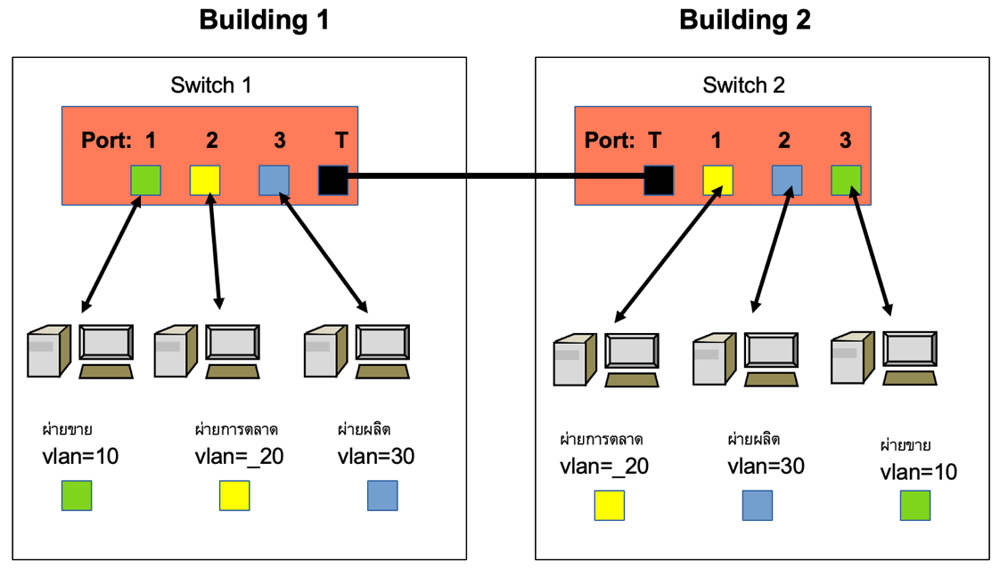
ภาพที่ 5-7 การใช้งานระบบวีแลนในองค์กร
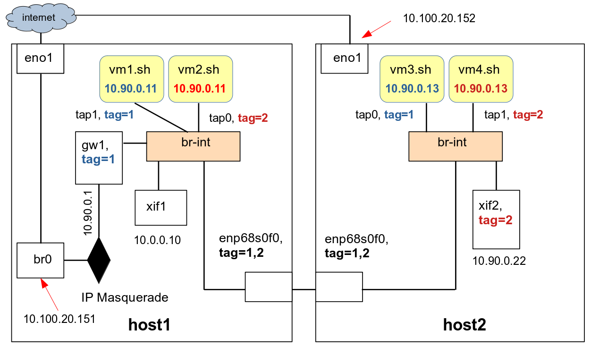
ภาพ 5-8 การใช้งานวีแลนในระบบเครือข่ายเสมือน
การส่งข้อมูลระหว่างพอร์ตที่มีค่าแทกเหมือนกันภายในสวิตช์เดียวกันกับการส่งข้อมูลข้ามสวิตช์ผ่านสายทรั้งมีรูปแบบของแฟรมของข้อมูลแบบอีเทอร์เนต
(Ethernet Frame)
ไม่เหมือนกัน
ในการสื่อสารระหว่างพอร์ตภายในสวิตช์เดียวกันแฟรมข้อมูลจะถูกส่งระหว่างพอร์ตที่มีค่าแทกเหมือนกันโดยไม่มีการเปลี่ยนเนื้อหาของแฟรมเฮดเดอร์แต่อย่างใด
แต่เมื่อมีการสื่อสารผ่านทรั้งพอร์ตค่าแทกของพอร์ตที่นำเข้าข้อมูลจะถูกใส่ลงไปในแฟรมแฮดเดอร์ด้วย
เมื่อสวิตช์ผู้รับได้รับข้อมูลก็จะใช้ค่าแทกในแฟรมเฮดเดอร์นี้เพื่อพิจารณาว่าจะนำส่งแฟรมไปที่พอร์ตใดได้บ้าง
ในระบบเครือข่ายเสมือน
ซอฟต์แวร์สวิตช์ก็อนุญาตให้มีการกำหนดค่าวีแลนแทกให้กับพอร์ตในสวิตช์เช่นกัน ภาพ 5-8 นำเสนอตัวอย่างการเชื่อมต่อและใช้งานระบบเครือข่ายเสมือนแบบใช้วีแลนแทกและทรั้งพอร์ต
ที่ผู้เขียนจะแสดงขั้นตอนการสร้างในอันดับถัดไป
รูปแบบคำสั่งเกี่ยวกับการกำหนดค่าวีแลนแทกให้กับโอเพนวีสวิตช์พอร์ต
เป็นดังนี้
ovs-vsctl set port port-name tag=tag-idovs-vsctl set port port-name tranks=tag-id1,tag-id2,... |
ก่อนที่จะกำหนดค่าวีแลนเทก ผู้อ่านจะใช้คำสั่ง ovs-vsctl show แสดงโครงสร้างของระบบเครือข่ายเสมือนบนเครื่อง
host1
On host1: $ sudo ovs-vsctl show... Bridge br-int Port gw1 Interface gw1 type: internal Port xif1 Interface xif1 type: internal Port tap0 Interface tap0 Port enp68s0f0 Interface enp68s0f0 Port tap1 Interface tap1 Port br-int Interface br-int type: internal...$ |
บนเครื่อง host1
ผู้อ่านใช้คำสั่งต่อไปนี้กำหนดให้ tap1 (ของ vm1)
มีค่าแท็กเท่ากับ 1 กำหนดให้ tap0 (ของ vm2)
มีค่าแท็กเท่ากับ 2 และอินเตอร์เฟส gw1 มีค่าแท็กคือ 2
On host1: $ sudo ovs-vsctl set port tap1 tag=1$ sudo ovs-vsctl set port tap0 tag=2$ sudo ovs-vsctl set port gw1 tag=2 |
หลังจากนั้น
ผู้อ่านจะเห็นค่าแท็กปรากฏในรายงานโครงสร้างของสวิตช์เสมือน
On host1: $ sudo ovs-vsctl show... Bridge br-int Port gw1 tag: 2 Interface gw1 type: internal Port xif1 Interface xif1 type: internal Port tap0 tag: 2 Interface tap0 Port enp68s0f0 Interface enp68s0f0 Port tap1 tag: 1 Interface tap1 Port br-int Interface br-int type: internal...$ |
จากการกำหนดค่าแทกข้างต้น
ผู้อ่านจะสามารถ ping จาก host1 ผ่าน gw1 (10.90.0.10) ไปยัง vm2 (10.90.0.12) ได้เพราะพอร์ตทั้งสองมีวีแลนแทกเดียวกัน แต่ไม่สามารถ ping ไปที่ vm1 (10.90.0.11) ได้เนื่องจากมีค่าแทกต่างกัน
On host1: $ ping 10.90.0.11PING 10.90.0.11 (10.90.0.11) 56(84) bytes of data.^C--- 10.90.0.11 ping statistics ---2 packets transmitted, 0 received, 100% packet loss, time 1023ms$ ping -c 1 10.90.0.12PING 10.90.0.12 (10.90.0.12) 56(84) bytes of data.64 bytes from 10.90.0.12: icmp_seq=1 ttl=64 time=0.941 ms--- 10.90.0.12 ping statistics ---1 packets transmitted, 1 received, 0% packet loss, time 0msrtt min/avg/max/mdev = 0.941/0.941/0.941/0.000 ms$ |
ผู้อ่านสามารถเปลี่ยนค่าแทกของ
gw1 ให้เป็น 1 โดยใช้คำสั่งต่อไปนี้
On host1: $ sudo ovs-vsctl remove port gw1 tag 2$ sudo ovs-vsctl set port gw1 tag=1$ sudo ovs-vsctl show... Bridge br-int Port gw1 tag: 1 Interface gw1 type: internal Port xif1 Interface xif1 type: internal Port tap0 tag: 2 Interface tap0 Port enp68s0f0 Interface enp68s0f0 Port tap1 tag: 1Interface tap1 Port br-int Interface br-int type: internal...$ |
หลังจากนั้น ผู้อ่านก็จะสามารถ ping vm1
ได้ แต่จะไม่สามารถ ping vm2 ได้
On host1: $ ping -c 1 10.90.0.11PING 10.90.0.11 (10.90.0.11) 56(84) bytes of data.64 bytes from 10.90.0.11: icmp_seq=1 ttl=64 time=1.79 ms--- 10.90.0.11 ping statistics ---1 packets transmitted, 1 received, 0% packet loss, time 0msrtt min/avg/max/mdev = 1.789/1.789/1.789/0.000 ms$ ping -c 1 10.90.0.12PING 10.90.0.12 (10.90.0.12) 56(84) bytes of data.^C--- 10.90.0.12 ping statistics ---1 packets transmitted, 0 received, 100% packet loss, time 0ms |
ผู้อ่านใช้วีเอ็นซีเข้าไปใช้งานคอนโซลของ
vm2
On any host in 10.100.20.0/24 subnet: $ $ xtightvncviewer 10.100.20.151:12 &$ |
และเปลี่ยนค่าไอพีแอดเดรสของ vm2 ให้เป็น 10.90.0.11 ให้เหมือนกับของ vm1 เพื่อแสดงว่าวีแลนสามารถรองรับวีเอ็มที่ไอพีแอดเดรสซ้ำซ้อนได้
และผู้อ่านสามารถแยกเข้าถึงแต่ละวีเอ็มโดยการกำหนดค่าแทกที่แตกต่าง
On vm2: $ cat /etc/netplan/00-installer-config.yaml...network: ethernets: ens3: addresses: - 10.90.0.12/24 gateway4: 10.90.0.1 nameservers: addresses: - 8.8.8.8 search: - tu.ac.th version: 2$$ cat /etc/netplan/00-installer-config.yaml | grep 10.90.0.12 - 10.90.0.12/24$ sudo sed -i "s/10.90.0.12/10.90.0.11/g" /etc/netplan/00-installer-config.yaml$ cat /etc/netplan/00-installer-config.yaml | grep 10.90.0.11 - 10.90.0.11/24$ sudo netplan apply |
เมื่อผู้อ่านใช้
ssh เรียกดู hostname ของ 10.90.0.11 จาก host1 จะได้คำตอบเป็น vm1 เพราะ gw1 และ vm1 ใช้แทกค่าเดียวกัน
On host1: $ ssh openstack@10.90.0.11 hostnamevm1$ |
ผู้อ่านจะใช้คำสั่งต่อไปนี้กำหนดค่าของวีแลนแทกของอินเตอร์เฟสบนเครื่อง
host2 ดังนี้
1.
กำหนดค่าให้ xif2 มีค่าแทกเท่ากับ
2
2.
กำหนดให้ค่าแทกของอินเตอต์เฟส tap0
ของ
vm3
เท่ากับ
1
และ
3.
กำหนดให้ค่าแทกของ tap1
ของ
vm4
เท่ากับ
2
และใช้คำสั่ง
ovs-vsctl แสดงรายการของพอร์ตทั้งหมด
On host2: $ sudo ovs-vsctl set port xif2 tag=2$ sudo ovs-vsctl set port tap0 tag=1$ sudo ovs-vsctl set port tap1 tag=2$ sudo ovs-vsctl show... Bridge br-int Port tap1 tag: 2 Interface tap1 Port xif2 tag: 2 Interface xif2 type: internal Port br-int Interface br-int type: internal Port tap0 tag: 1 Interface tap0 Port enp68s0f0 Interface enp68s0f0...$ |
จากค่าแทกที่กำหนด ผู้อ่านจะสามารถ ping vm4 จากเครื่อง host2 (ผ่าน xif2) ได้ แต่จะไม่สามารถ
ping vm3 ได้ ในชุดคำสั่งข้างล่าง
ผู้อ่านสามารถใช้คำสั่ง route เพื่อแสดงตารางการเลือกเส้นทางส่งต่อข้อมูล (routing table) ในเคอร์เนิลของโอเอสของเครื่อง
host2 ซึ่งจะเห็นว่าถ้าแพคเกตมีค่าไอพีปลายทางอยู่ในซับเน็ต
10.90.0.0/24 แพคเกตจะถูกส่งต่อไปยังอินเตอร์เฟส
xif2 ส่วนในคำสั่งถัดไปจะเห็นได้ว่า
ผู้อ่านสามารถ ping 10.90.0.14 (vm4) ได้ (แต่ vm3 ไม่ได้)
ในคำสั่ง ping
10.90.0.11 (ขีดเส้นใต้) ผู้อ่านสามารถ ping จากเครื่อง host2 ไปยัง vm2 ซึ่งอยู่บนเครื่อง host1 ได้เพราะสาเหตุสองประการ
1. ในภาพ
5-8
สวิตช์
br-int
บนเครื่อง host2
เชื่อมต่อกับอินเตอร์เฟส
enp68s0f0
ซึ่งจะส่งต่อข้อความ
ARP
จาก
br-int
บน
host2
ข้ามเครื่องไปยัง
br-int
บนเครื่อง
host1
และส่งต่อไปที่
tap0
ของ
vm2
ในที่สุด
2.
แทกของ xif2 และ tap0
บนเครื่อง
host1
มีค่าเท่ากับ
2
เท่ากัน
ส่วนอินเตอร์เฟส enp68s0f0 บนทั้งสองเครื่องยังไม่ได้รับการกำหนดค่าแทก
และโดยดีฟอลต์เมื่ออินเตอร์เฟสไม่ได้รับการกำหนดค่าแทกอินเตอร์เฟสจะสามารถส่งข้อมูลที่มีค่าแทกได้ทุกแทก
On host2: $ route -nKernel IP routing tableDestination Gateway Genmask Flags Metric Ref Use Iface0.0.0.0 10.100.20.1 0.0.0.0 UG 0 0 0 br010.90.0.0 0.0.0.0 255.255.255.0 U 0 0 0 xif210.100.20.0 0.0.0.0 255.255.255.0 U 0 0 0 br0$$ ping -c 1 10.90.0.13PING 10.90.0.13 (10.90.0.13) 56(84) bytes of data.^C--- 10.90.0.13 ping statistics ---1 packets transmitted, 0 received, 100% packet loss, time 0ms$ ping -c 1 10.90.0.14PING 10.90.0.14 (10.90.0.14) 56(84) bytes of data.64 bytes from 10.90.0.14: icmp_seq=1 ttl=64 time=0.920 ms--- 10.90.0.14 ping statistics ---1 packets transmitted, 1 received, 0% packet loss, time 0msrtt min/avg/max/mdev = 0.920/0.920/0.920/0.000 ms$ ping -c 1 10.90.0.11PING 10.90.0.11 (10.90.0.11) 56(84) bytes of data.64 bytes from 10.90.0.11: icmp_seq=1 ttl=64 time=1.62 ms--- 10.90.0.11 ping statistics ---1 packets transmitted, 1 received, 0% packet loss, time 0msrtt min/avg/max/mdev = 1.615/1.615/1.615/0.000 ms$ |
บนเครื่อง host1 ผู้อ่านสามารถ ping ข้ามเครื่องมายัง
vm3 บน host2 ได้แต่ไม่สามารถ
ping vm4 ได้
เพราะวีแลนแท็กของ gw1 เท่ากับของ vm3 แต่ไม่เท่ากับของ vm4
On host1: $ route -nKernel IP routing tableDestination Gateway Genmask Flags Metric Ref Use Iface0.0.0.0 10.100.20.1 0.0.0.0 UG 0 0 0 br010.0.0.0 0.0.0.0 255.255.255.0 U 0 0 0 xif110.90.0.0 0.0.0.0 255.255.255.0 U 0 0 0 gw110.100.20.0 0.0.0.0 255.255.255.0 U 0 0 0 br0$$ ping -c 1 10.90.0.13PING 10.90.0.13 (10.90.0.13) 56(84) bytes of data.64 bytes from 10.90.0.13: icmp_seq=1 ttl=64 time=1.67 ms--- 10.90.0.13 ping statistics ---1 packets transmitted, 1 received, 0% packet loss, time 0msrtt min/avg/max/mdev = 1.673/1.673/1.673/0.000 ms$ ping -c 1 10.90.0.14PING 10.90.0.14 (10.90.0.14) 56(84) bytes of data.^C--- 10.90.0.14 ping statistics ---1 packets transmitted, 0 received, 100% packet loss, time 0ms$ |
ประโยชน์ประการหนึ่งของระบบเครือข่ายแบบวีแลนคือ
ผู้อ่านสามารถกำหนดให้ กลุ่มของพอร์ต
(ช่องทางที่อินเตอร์เฟสเชื่อมต่อเข้ากับสวิตช์)
บนระบบเครือข่ายเสมือนที่มีค่าวีแลนแทกแตกต่างกันให้ใช้ซับเน็ตและไอพีแอดเดรสที่มีค่าซ้ำกันได้
ในภาพ 5-8 จะเห็นว่า ในกลุ่มของพอร์ตที่ค่าแทกของอินเตอร์เฟสเท่ากับ
2 ค่าไอพีของอินเตอร์เฟส
xif2 ของ tap1 ของ vm4 และของ tap0 ของ vm2 อยู่ในซับเน็ต 10.90.0.0/24 และในกลุ่มของพอร์ตที่ค่าแทกของอินเตอร์เฟสเท่ากับ
1 ในภาพก็อยู่ในซับเน็ต
10.90.0.0/24
เช่นเดียวกัน นอกจากนั้นค่าไอพีของ vm1 และ vm2 ก็ซ้ำกันได้ด้วย
ในอันดับถัดไป เพื่อกำหนดค่าให้เหมือนในภาพ 5-8 ผู้อ่านจะเปลี่ยนค่าไอพีของ vm4 ให้เป็น 10.90.0.13 โดยใช้วีเอ็นซีเข้าคอนโซลของ
vm4
On any host in 10.100.20.0/24 subnet: $ $ xtightvncviewer 10.100.20.152:14 &$ |
เมื่อล็อกอินแล้วให้เปลี่ยนค่าไอพีแอดเดรสของ vm4 เป็น 10.90.0.13 (ด้วยคำสั่ง sed ข้างล่าง และผู้อ่านต้องไม่ลืมที่จะใช้คำสั่ง netplan apply ทุกครั้งที่มีการเปลี่ยนแปลง)
เพื่อแสดงให้เห็นว่าวีแลนสามารถรองรับไอพีแอดเดรสซ้ำซ้อนได้ (ตอนนี้ไอพีของ vm3 และ vm4 ก็จะเท่ากันเช่นกัน)
On vm4: $ $ cat /etc/netplan/00-installer-config.yaml...network: ethernets: ens3: addresses: - 10.90.0.14/24 gateway4: 10.90.0.1 nameservers: addresses: - 8.8.8.8 search: - tu.ac.th version: 2$$ cat /etc/netplan/00-installer-config.yaml | grep 10.90.0.14 - 10.90.0.14/24$ sudo sed -i "s/10.90.0.14/10.90.0.13/g" /etc/netplan/00-installer-config.yaml$ cat /etc/netplan/00-installer-config.yaml | grep 10.90.0.13 - 10.90.0.13/24$ sudo netplan apply |
ในระบบเครือข่ายวีแลนเสมือน
ผู้อ่านสามารถกำหนดค่าทรั้งค์พอร์ต trunk
port ซึ่งหมายถึงพอร์ตที่เชื่อมต่อระหว่างสวิตช์
ซึ่งในที่นี้หมายถึงอาเตอร์เฟส enp68s0f0 บนเครื่อง host1 และ host2 ที่ทำหน้าที่เชื่อมต่อสวิตช์เสมือน br-int ของเครื่องโฮสต์ทั้งสองเข้าด้วยกัน
ในคำสั่งถัดไป ผู้อ่านจะกำหนดให้ทรั้งพอร์ตมีค่าแทกเท่ากับ 1 บนเคื่อง host1
On host1: $ sudo ovs-vsctl set port enp68s0f0 trunks=1$ sudo ovs-vsctl show Bridge br-int Port gw1 tag: 1 Interface gw1 type: internal Port xif1 Interface xif1 type: internal Port tap0 tag: 2 Interface tap0 Port enp68s0f0 trunks: [1] Interface enp68s0f0 Port tap1 tag: 1 Interface tap1 Port br-int Interface br-int type: internal...$ |
คำสั่งข้างต้นส่งผลให้
Host2 ไม่สามารถ ping vm2 ได้ เพราะค่าแทกของ
xif2 ไม่เท่ากับค่าแทกของทรั้งพอร์ต
On host2: $ ping -c 1 10.90.0.11PING 10.90.0.11 (10.90.0.11) 56(84) bytes of data.^C--- 10.90.0.11 ping statistics ---1 packets transmitted, 0 received, 100% packet loss,…. |
แต่ในทางกลับกัน
Host1 สามารถ ping vm3 ได้ เพราะวีแทนแทกของ
gw1 และของทรั้งพอร์ตตรงกัน
On host1: $ ping -c 1 10.90.0.13PING 10.90.0.13 (10.90.0.13) 56(84) bytes of data.64 bytes from 10.90.0.13: icmp_seq=1 ttl=64 time=1.87 ms--- 10.90.0.13 ping statistics ---1 packets transmitted, 1 received, 0% packet loss, time 0msrtt min/avg/max/mdev = 1.865/1.865/1.865/0.000 ms$ |
ผู้อ่านสามารถกำหนดให้ทรั้งพอร์ตรองรับแพคเกตที่มีค่าวีแลนแทกที่แตกต่างกันได้
คำสั่งข้างล่างเปลี่ยนค่าแทกของทั้งพอร์ต enp68s0f0 ให้ส่งต่อแพคเกจที่มีค่าแทกเท่ากับ 1 หรือ 2 ก็ได้
หลังจากนั้น ผู้อ่านก็จะสามารถก็จะสามารถ ping vm ข้ามเครื่องจากเครื่องโฮสต์ทั้งสองเครื่องได้เหมือนเดิม
On host1: $ sudo ovs-vsctl set port enp68s0f0 trunks=1,2$ sudo ovs-vsctl show Bridge br-int Port gw1 tag: 1 Interface gw1 type: internal Port xif1 Interface xif1 type: internal Port tap0 tag: 2 Interface tap0 Port enp68s0f0 trunks: [1, 2] Interface enp68s0f0 Port tap1 tag: 1 Interface tap1 Port br-int Interface br-int type: internal...$ |
ในคำสั่งข้างต้น
ผู้อ่านกำหนดค่าแทกสำหรับทรั้งพอร์ตบนเครื่อง host1 ซึ่งผู้อ่านสามารถกำหนดค่าแทกให้ทรั้งพอร์ตของ
br-int บน host2 ได้เช่นเดียวกัน
ซึ่งแพคเกตที่จะสามารถส่งผ่านทรั้งพอร์ตทั้งสองได้ต้องเป็นแพกเกตที่มีคุณสมบัติตรงตามเงื่อนไขของทรั้งพอร์ตบนทั้งสองเครื่อง
คำสั่งต่อไปนี้เป็นการกำหนดค่าแทกของทรั้งพอร์ตบนเครื่อง host2 ให้เหมือนกับค่าแทกของทรั้งพอร์ตของ host1
On host2: $ sudo ovs-vsctl set port enp68s0f0 trunks=1,2 |
5.6.1
การกำหนดค่าวีแลนแทกด้วยเฟกบริดจ์
เนื่องจากการกำหนดค่าวีแลนแทกให้กับพอร์ตของวีเอ็มหลังจากรันวีเอ็มแล้วทำได้ยาก
เพราะเราจะไม่รู้ว่าชื่อแทบอินเตอร์เฟสใดเป็นของวีเอ็มใด ดังนั้นผู้ออกแบบระบบเครือข่ายวีแลนเสมือนจึงได้สร้างสิ่งที่จะช่วยให้ผู้อ่านสามารถกำหนดค่าวีแลนแทกให้กับอินเตอร์เฟสของวีเอ็มเรียกว่าเฟกบริดจ์ขึ้น
(fake bridge)
เฟกบริดจ์คือการกำหนดชื่อสวิตช์ใหม่ให้กับสวิตช์เสมือนที่มีอยู่แล้ว
แต่ชื่อสวิตช์ใหม่นี้จะถูกแนบด้วยค่าวีแลนแทกค่าใดค่าหนึ่งโดยเฉพาะ
เมื่อวีเอ็มสร้างแทปอินเตอร์เฟสและเชื่อมต่อแทปอินเตอร์เฟสเข้ากับเฟกบริดจ์ แทปอินเตอร์เฟสนั้นก็จะได้รับการกำหนดค่าวีแลนแทกของเฟก์บริดจ์โดยอัตโนมัติ
คำสั่งสร้างเฟกบริดจ์มีรูปแบบดังนี้
ovs-vsctl add-br fake-bridge parent-bridge VLAN |
ในหัวข้อนี้
ผู้อ่านจะสร้างเฟกบริด์และใช้เฟกบริดจ์ประกอบการรัน vm1 ซึ่งผู้อ่านจะต้องปิดเครื่อง vm1 ที่รันอยู่แต่เดิมดังนี้ (สมมุติว่าคอมมานด์ไลน์พร๊อม vm1$ หมายถึงการออกคำสั่งคอมมานด์ไลน์ในเชลของเครื่อง
vm1)
On host1: $ ssh openstack@10.90.0.11vm1$ sudo poweroff |
ผู้อ่านจะต้องทำดังนี้เพื่อสร้างและรันวีเอ็มแบบใช้เฟกบริดจ์
ขั้นที่ 1: สร้างเฟกบริดจ์
ในตัวอย่างข้างล่าง ผู้อ่านจะสร้างเฟกบริดจ์ชื่อ vlan1 ให้มีค่าวีแลนแทกเท่ากับ 1
On host1: $ sudo ovs-vsctl add-br vlan1 br-int 1 |
หลังจากสร้างแล้ว
ผู้อ่านสามารถใช้คำสั่ง ovs-vsctl show ดูโครงสร้างของสวิตช์เสมือนซึ่งจะเห็นว่ามีพอรต์ชื่อ vlan1 เกิดขึ้นและพอร็ตนี้มีค่าแทกเท่ากับ
1 ขอให้ผู้อ่านสังเกตว่าในลิสต์ของพอร์ต
มีพอร์ตชื่อ tap0 (ค่าแทก 2) ซึ่งเป็นชื่ออินเตอร์เฟสของวีเอ็มเพียงเครื่องเดียวที่รันอยู่บนเครื่อง
host1 อยู่
On host1: $ sudo ovs-vsctl show Bridge br-int Port gw1 tag: 1 Interface gw1 type: internal Port xif1 Interface xif1 type: internal Port tap0 tag: 2 Interface tap0 Port vlan1 tag: 1 Interface vlan1 type: internal Port enp68s0f0 trunks: [1, 2] Interface enp68s0f0 Port br-int Interface br-int type: internal...$ |
ขั้นที่ 2 : สร้างสคริปต์ไฟล์สองไฟล์เพื่อให้คิวอีมูไฮเปอร์ไวเซอร์เรียกเพื่อเชื่อมต่อแทปอินเตอร์เฟสเข้าสูเฟกบริดจ์
vlan1 เมื่อคิวอีมูเริ่มรันวีเอ็มและเพื่อลบพอร์ตและแทปอินเตอร์เฟสออกจาก
vlan1 เมื่อวีเอ็มจบการทำงาน
สคริปต์ทั้ง สองจะต้องเป็นแบบ executable (ในตัวอย่างนี้เรากำหนดให้ permission flag
คือ 755) ไฟล์ทั้งสองได้แก่
· ovs-vlan1-ifup ซึ่งจะใช้คำสั่ง ovs-vsctl
add-port เข้ากับสวิตช์ vlan1
· ovs-vlan1-ifdown ซึ่งจะใช้คำสั่ง ovs-vsctl
del-port ออกจาก
vlan1
On host1: $ cd /srv/kasidit/bookhosts/etc$ cp ovs-ifup ovs-vlan1-ifup$ cp ovs-ifdown ovs-vlan1-ifdown$$ vi ovs-vlan1-ifup$ cat ovs-vlan1-ifup#!/bin/sh switch='vlan1'/usr/sbin/ifconfig $1 0.0.0.0 up/usr/bin/ovs-vsctl add-port ${switch} $1$$ vi ovs-vlan1-ifdown$ cat ovs-vlan1-ifdown#!/bin/sh switch='vlan1'/usr/sbin/ifconfig $1 0.0.0.0 down/usr/bin/ovs-vsctl del-port ${switch} $1$ |
ขั้นที่ 3 : ผู้อ่านใช้คำสั่งข้างล่างเขียนสคริปต์สำหรับรันวีเอ็มชื่อ
vm1-fb.sh โดยที่สคริปต์จะเรียกใช้ ovs-vlan1-ifup และ ovs-vlan1-ifdown
ในบรรทัดออปชั่นที่ขีดเส้นใต้
On host1: $ cd /srv/kasidit/bookhosts/scripts$ cp vm1.sh vm1-fb.sh$ vi vm1-fb.sh $$ cat vm1-fb.sh #!/bin/bash numsmp="6"memsize="8G"etcloc=/srv/kasidit/bookhosts/etcimgloc=/srv/kasidit/bookhosts/images/imgfile="vm1.ovl"#exeloc="/usr/bin"#sudo ${exeloc}/qemu-system-x86_64 \ -enable-kvm \ -cpu host,kvm=off \ -smp ${numsmp} \ -m ${memsize} \ -drive file=${imgloc}/${imgfile},format=qcow2 \ -boot c \ -vnc :11 \ -qmp tcp::9111,server,nowait \ -monitor tcp::9112,server,nowait \ -netdev type=tap,script=${etcloc}/ovs-vlan1-ifup,\ downscript=${etcloc}/ovs-vlan1-ifdown,id=hostnet1 \ -device virtio-net-pci,romfile=,netdev=hostnet1,mac=00:81:50:b0:01:94 \ -rtc base=localtime,clock=vm $ |
ขั้นที่ 4 : สุดท้าย ผู้อ่านจะรันวีเอ็ม vm1-fb และตรวจสอบการเชื่อมต่อ
On host1: $ ./vm1-fb.sh & |
และเมื่อรันแล้ว
ผู้อ่านสามารถลิสต์ดูรายการพอร์ตและจะเห็นว่ามีพอร์ตชื่อ tap1 (เชื่อมต่อกับแทปอินเตอร์เฟสชื่อเดียวกัน) ถูกสร้างขึ้นและพอร์ตนี้มีค่าวีแลนแทกคือ
1
On host1: $ sudo ovs-vsctl show... Bridge br-int... Port tap0 tag: 2 Interface tap0 Port vlan1 tag: 1 Interface vlan1 type: internal Port enp68s0f0 trunks: [1, 2] Interface enp68s0f0 Port tap1 tag: 1 Interface tap1 Port br-int Interface br-int type: internal... |
ขอให้ผู้อ่านสังเหตุว่า พอร์ต vlan1 นั้นเป็นเหมือนสวิตช์แบบบริดจ์จำลองที่วีเอ็มอ้างอิงเพื่อใช้สร้างพอร์ต
tap0 เพื่อเชื่อมต่อแทบอินเตอร์เฟสของตนเท่านั้น
เมื่อพิจารณาจากโครงสร้างจะเห็นว่า tap0 เป็นพอร์ตภายในสวิตช์ br-int ไม่ไช่ vlan1 (ซึ่งจริงๆแล้วเป็นเพียงแค่พอร์ตหนึ่งของ br-int เช่นกัน)
จากภาพ
5-8 วีเอ็มที่มีค่าไอพี
10.90.0.11 มีอยู่สองวีเอ็ม
คือ vm1 และ vm2 ซึ่งมีค่าวีแลนแท็กคือ
1 และ 2 ตามลำดับ ผู้อ่านสามารถทดสอบความถูกต้องของ
vm1 ที่เพิ่งรันได้
โดยออกคำสั่งประมวลผลคำสั่งทางไกลข้างล่างให้เครื่องที่มีไอพี 10.90.0.11 รันคำสั่ง hostname จากเครื่อง host1 ซึ่งมีอินเตอร์เฟส
gw1 ที่มีค่าวีแลนแท็กคือ
1 เหมือนกัน
ถ้าทุกอย่างถูกต้อง ผู้อ่านจะได้ผลลัพธ์ข้างล่าง
On host1: $ ssh openstack@10.90.0.11 hostnamevm1$ |
5.6.2
การลบค่าวีแลนแทกออกจากพอร์ตและทรั้งพอร์ต
ในขณะที่วีเอ็มรันอยู่
ผู้อ่านสามารถลบค่าวีแลนแท็กออกจากพอร์ตได้เสมอ ซึ่งพอร์ตที่ถูกลบค่าแท็กออกจะกลับไปอยู่ในสถานะดีฟอลต์คือยอมรับแพคเกตที่มีค่าหรือไม่มีค่าแทกก็ได้
และหลังจากลบค่าวีแลนแท็กไปแล้ว
ผู้อ่านจะกำหนดค่าแท็กให้ใหม่ภายหลังโดยใช้คำสั่งที่ได้บรรยายไปก่อนหน้าก็ได้
ในการลบค่าวีแลนแท็กออกจากโอเพนวีสวิตช์พอร์ตและทรั้งพอร์ตบนเครื่อง
host1
ผู้อ่านสามารถออกคำสั่งต่อไปนี้
On host1: $ sudo ovs-vsctl remove port gw1 tag 1$ sudo ovs-vsctl remove port tap0 tag 2$ sudo ovs-vsctl remove port tap1 tag 1$ sudo ovs-vsctl del-br vlan1$ sudo ovs-vsctl remove port enp68s0f0 trunks 1$ sudo ovs-vsctl remove port enp68s0f0 trunks 2$ sudo ovs-vsctl show... Bridge br-int Port gw1 Interface gw1 type: internal Port xif1 Interface xif1 type: internal Port tap0 Interface tap0 Port enp68s0f0 Interface enp68s0f0 Port tap1 Interface tap1 Port br-int Interface br-int type: internal...$ |
บนเครื่อง host2 ผู้อ่านจะออกคำสั่งแบบเดียวกัน
ซึ่งผู้เขียนจะขอให้ทำเป็นแบบฝึกหัด
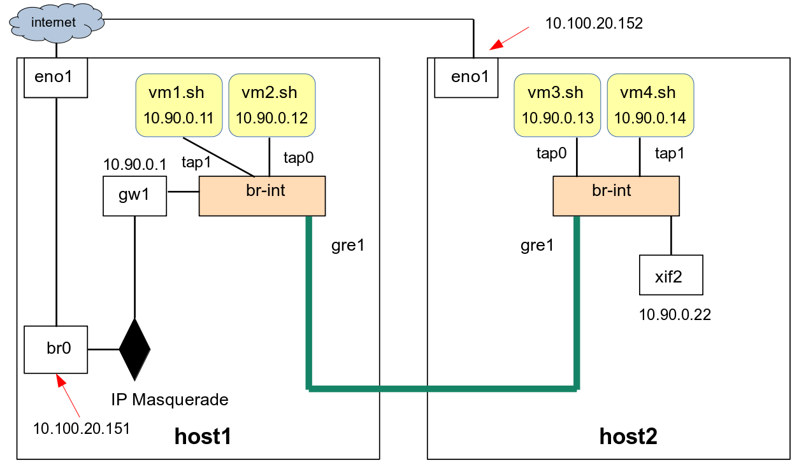
ภาพ 5-8 การเชื่อมต่อ GRE tunnelling ระหว่าง br-int ของเครื่องโฮสต์สองเครื่อง
5.7 การสร้างและใช้งานจีอาร์อีทันเนิลบนระบบเครือข่ายเสมือน
หลักการในการแบ่งแยกพอร์ตในระบบเครือข่ายของวีแลนจะเป็นหลักการที่เหมาะสมที่จะนำไปใช้สร้างระบบเครือข่ายที่สามารถรองรับผู้ใช้ที่เป็นองค์กรหลายองค์กรเพราะผู้ดูแลระบบเครือข่ายสามารถกำหนดให้แต่ละองค์กรมีค่าวีแลนแท็กของตน
และผู้ดูแลระบบสามารถกำหนดค่าวีแลนแท็กตามความเหมาะสมให้กับพอร์ตของสวิตช์แบบฮาร์ดแวร์
หรือพอร์ตของสวิตช์แบบซอฟต์แวร์ที่จะให้องค์กรเหล่านั้นใช้ได้
แต่ระบบเครือข่ายแบบวีแลนมีข้อจำกัดคือผู้ดูแลระบบสามารถสร้างระบบเครือข่ายแบบวีแลนที่มีค่าแท็กแตกต่างกันได้มากที่สุดเพียงแค่
4096 เครือข่ายเท่านั้น
สาเหตุที่ระบบเครือข่ายแบบวีแลนมีข้อจำกัดเช่นนี้ก็เพราะว่าขนาดของพื้นที่ในไอพีเฮดเดอร์ที่ใช้เก็บค่าวีแลนแท็กมีขนาดเพียงสิบสองบิต
()
ด้วยเหตุนี้จึงมีการพัฒนาระบบเครือข่ายแบบทันเนิล (Tunneling) เช่น
จีอาร์อีทันเนิล (GRE tunnel)
ระบบเจนเนอร์ริคเร้าต์ติ้งเอ็นแคปซูเลชั่น (Generic Routing Encapsulation) หรือจีอาร์อี (GRE) เป็นการสร้างเอ็นแคปซูเลชั่น (Encapsulation) ของไอพีแพคเกต
โดยการเพิ่มข้อมูลเรียกว่า จีอาร์อีเฮดเดอร์ (GRE header) ลงในอีเทอร์เนตเฟรม (Ethernet Frame) ซึ่งเป็นหน่วยของข้อความที่ส่งในระบบเครือข่ายระดับ
แอลสอง (L2) หรือดาต้าลิงค์เลเยอร์
การเพิ่มจีอาร์อีเฮดเดอร์เข้าไปทำให้พื้นที่สำหรับส่งข้อมูลในอีเทอร์เน็ตเฟรมลดลง
แต่ประโยชน์ที่ได้คือ ในจีอาร์อีเฮดเดอร์มีฟิลด์ (field) คีย์ (key) ขนาดสามสิบสองบิต
ซึ่งสามารถนำไปใช้เป็นค่าไอดีที่ทำหน้าที่เหมือนวีแลนแทกได้
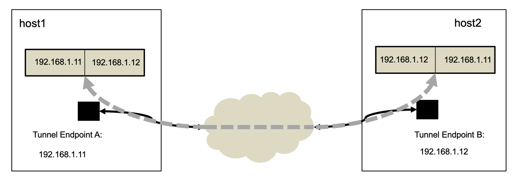
ภาพ 5-9 แสดงโครงสร้างของจีอาร์อีทันเนิลเอ็นด์พอยท์บนเครื่องโฮสต์ที่จะสื่อสารด้วยจีอาร์อีโปรโตคอล
ก่อนที่ผู้เขียนจะอธิบายการสร้างจีอาร์อีทันเนิล
ผู้เขียนจะอธิบายส่วนประกอบของการสื่อสารแบบใช้จีอาร์อีทันเนิลและกระบวนการสื่อสารข้อมูลผ่านจีอาร์อีทันเนิล
ส่วนประกอบแรกที่โฮสต์คอมพิวเตอร์ที่ต้องการจะทำให้วีเอ็มในโฮสต์สามารถสื่อสารกับวีเอ็มเครื่องอื่นบนโฮสต์เครื่องอื่นด้วยจีอาร์อีโปรโตคอลต้องมีคือ
ทันเนิลเอ็นด์พอยท์ (Tunnel Endpoint) ซึ่งก็คือไอพีแอดเดรสบนเน็ตเวิร์คอินเตอร์เฟสของเครื่องที่สามารถสื่อสารข้อมูลกับระบบเครือข่ายได้
โดยที่ผู้ดูแลระบบของเครื่องโฮสต์ที่ต้องการสื่อสารกันด้วยจีอาร์อีโปรโตคอลจะต้องเช็คว่าเครื่องโฮสต์เหล่านั้นสารถแลกเปลี่ยนข้อมูลผ่านไอพีโปรโตคอลถึงกันและกันได้ตามปกติ
ภาพ 5-9 แสดงโฮสต์สองเครื่องที่เครื่องโฮสต์
host1 มีทันเนิลเอ็นด์พอยท์คือ
192.168.1.11 และเครื่องโฮสต์
host2 มีทันเนิลเอ็นด์พอยท์คือ
192.168.1.12 หลังจากที่มีทันเนิลเอ็นด์พอยท์แล้ว
ผู้ใช้ก็สามารถสร้างจีอาร์อีทันเนิลที่เป็นตัวแทนของการเชื่อมต่อและการสื่อสารระหว่างเครื่องโฮสต์ทั้งสอง
ในภาพจีอาร์อีทันเนิลบนเครื่อง host1 และ host2 มีข้อมูลของเอ็นด์พอยท์ที่เป็นต้นทางและปลายทางของการส่งข้อมูล
เมื่อใดที่มีการส่งข้อมูลผ่านทันเนิลจากฝั่งหนึ่งข้อมูลจะถูกส่งไปอีกฝั่งหนึ่งเสมอ
ตาราง 5-1 แสดงเฮดเดอร์ของแพคเกตในจีอาร์อีทันเนิล
|
โครงสร้างของไอพีแพคเกตผ่านทันเนิล |
ค่าไอพีในแพคเกตเฮดเดอร์ |
อันดับ |
||
|
ผู้ส่ง |
ผู้รับ |
เพิ่ม |
ลบ |
|
|
ข้อมูล
(Payload) |
ข้อความ A |
ข้อความ A |
|
|
|
อินเนอร์ไอพี
เฮดเดอร์ (Inner IP Header) |
10.90.0.11 |
10.90.0.13 |
1 |
3 |
|
จีอาร์อี
เฮดเดอร์ (GRE
Header) |
ข้อมูลเฮดเดอร์ |
ข้อมูลเฮดเดอร์ |
2 |
2 |
|
เอ้าเตอร์ไอพี
เฮดเดอร์ (Outer IP Header) |
192.168.1.11 |
192.168.1.12 |
3 |
1 |
ในการทำความเข้าใจขั้นตอนการสื่อสารข้อมูลผ่านจีอาร์อีทันเนิล
ผู้เขียนจะใช้ตัวอย่างในตาราง 5-1 และภาพ 5-10 ดังที่จะได้อธิบายต่อไป
จากตารางสมมุติว่าวีเอ็ม vm1 บน host1 ต้องการส่งข้อความ A ไปให้ vm3 บน host2 วีเอ็ม vm1 ก็จะต้องสร้างไอพีแพคเกต
ซึ่งแพคเกตจะผ่านการเอ็นแคปสูเลชั่น (encapsulation)
ตามอันดับต่อไปนี้
1. วีเอ็ม
vm1
สร้างไอพีแพคเกตโดยเพิ่มเฮดเดอร์ของไอพีแพคเกตนี้ซึ่งมีค่าไอพีของผู้ส่งคือ
10.90.0.11
และไอพีของผู้รับคือ
10.90.0.13
หน้าข้อความ
A
(อันดับการเพิ่ม
1
ในตาราง)
2. เครื่อง
host1
เพิ่มข้อมูลจีอาร์อีเฮดเดอร์หน้าอินเนอร์แพคเกต
(อันดับการเพิ่ม
2
ในตาราง)
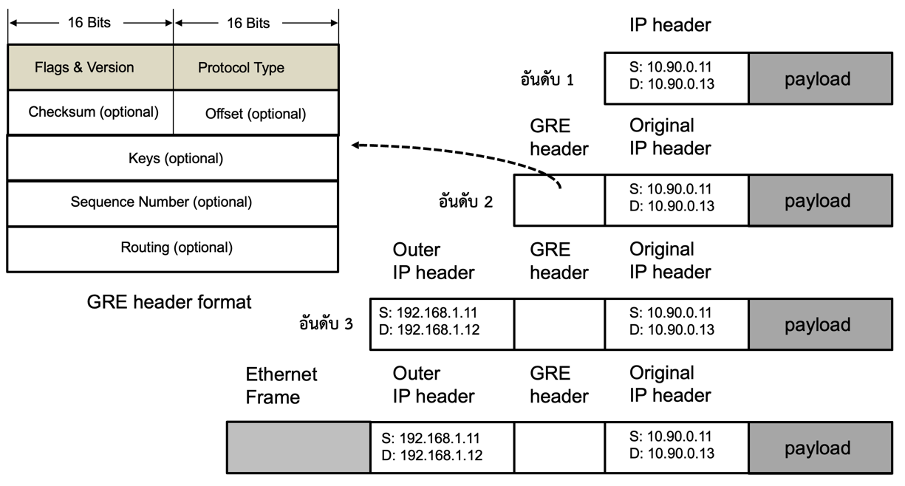
ภาพ 5-10 รูปแบบของจีอาร์อีเฮดเดอร์และตัวอย่างของไอพีเฮดเดอร์ของแพคเกตที่ใช้จีอาร์อีโปรโตคอล
3. เครื่อง
host1
เพิ่มเฮดเดอร์ของไอพีแพคเกตที่เป็นแพคเกตที่ห่อหุ้มอินเนอร์แพคเกต
หรือเอ้าเตอร์ไอพีโดยที่ค่าเอ้าเตอร์ไอพีของผู้ส่งคือ 192.168.1.11 และเอ้าเตอร์ไอพีของผู้รับคือ
192.168.1.12
หน้าหน้าจีอาร์อีเฮดเดอร์
(อันดับการเพิ่ม
3
ในตาราง)
หลังจากนั้นเครื่อง host1 จะส่งเอ้าเตอร์แพคเกตให้ host2 ซึ่งเมื่อถึงแล้วโอเอสจะนำแพคเกตเข้าสู่กระบวนการดีแคปสูเลชั่น
(decapsulation) ดังนี้
1. เครื่อง
host2
อ่านและลบข้อมูลเอ้าเตอร์ไอพีเฮดเดอร์ออกจากแพคเกต
(อันดับการลบ 1
ในตาราง)
2. เครื่อง
host2
อ่านและลบข้อมูลจีอาร์อีเฮดเดอร์ออกจากแพคเกต
(อันดับการลบ 2
ในตาราง)
3. วีเอ็ม
vm3
อ่านและลบข้อมูลอินเนอร์ไอพีเฮดเดอร์ออกจากแพคเกต
(อันดับการลบ 3
ในตาราง)
เมื่อแพคเกตถูกส่งไปถึงเครื่อง host2 โอเอสเคอร์เนิลจะอ่านค่าชนิดของแพคเกตจากแพคเกตเฮดเดอร์
เมื่อเคอร์เนิลทราบว่าเป็นแพคเกตแบบจีอาร์อี ก็จะรู้ว่าจะต้องใช้กระบวนการดีแคปสูเลชั่นแบบใด
ในภาพ 5-10 ทางด้านขวาของภาพแสดงภาพของเฮดเดอร์ของแพคเกตที่ถูกส่งผ่านทันเนิลตามอันดับที่ได้อธิบายไปก่อนหน้า
ในหัวเรื่อง “อันดับ 1” ในภาพแสดงไอพีแพคเกตดังเดิมที่ถูกส่งจากวีเอ็ม
vm1 ไปยัง vm3 ผู้อ่านจะเห็นได้ว่าในไอพีแฮดเดอร์มีข้อมูลไอพีแอดเดรสต้นทางคือ
10.90.0.11 และไอพีแอดเดรสปลายทางคือ
10.90.0.13 หลังจากนั้น
เมื่อแพคเกตถูกส่งผ่านเข้าสู่จีอาร์อีทันเนิล ในหัวเรื่อง “อันดับ 2” จีอาร์อีโปรโตคอลจะเพิ่มจีอาร์อีเฮดเดอร์หน้าเฮดเดอร์ดั้งเดิมของแพคเกต
หลังจากนั้นเมื่อแพคเกตถูกส่งผ่านทันเนิลเอ็นด์พอยท์บนเครื่อง host1 โฮสต์โอเอสจะเพิ่มเอ้าเตอร์ไอพีเฮดเดอร์
(Outer IP header) ซึ่งมีรูปแบบเหมือนกับไอพีแพคเกตตามปกติหน้าจีอาร์อีเฮดเดอร์
ในหัวเรื่อง “อันดับ 3” ภาพแสดงว่าเอ้าเตอร์ไอพีเฮดเดอร์ประกอบไปด้วยข้อมูลไอพีแอดเดรสต้นทางของทันเนิลถูกแปลงให้เป็นไอพีแอดเดรสต้นทางของเอ้าเตอร์ไอพีแพคเกตคือ
192.168.1.11 และค่าไอพีแอดเดรสปลายทางของทันเนิลถูกแปลงให้เป็นไอพีแอดเดรสปลายทางของเอ้าเตอร์ไอพีแพคเกตคือ
192.168.1.12 หัวเรื่อง
“อันดับ 1” “อันดับ 2” และ “อันดับ 3” ในภาพสอดคล้องกับลำดับของการเอ็นแคปสูเลชั่นในตารางที่
5-1 หลังจากการเอ็นแคปสูเลชั่นใน
“อันดับ 3” แล้ว
เอ้าเตอร์ไอพีแพคเกตจะถูกเพิ่มอีเธอร์เน็ตเฟรมข้างหน้าดังภาพ แล้วส่งไปยังเครื่อง host2 ต่อไป
ทางด้านซ้ายของภาพ 5-10 แสดงรายละเอียดของจีอาร์เฮดเดอร์ ซึ่งมีขนาดตั้งแต่ 4 ถึง 20 ไบต์
จีอาร์อีเฮดเดอร์มีขนาดอย่างน้อย 4 ไบต์ เนื้อหาในเฮดเดอร์ต้องประกอบไปด้วยค่าแฟลก (Flags) และค่าชนิดของโปรโตคอล
(Protocol Type) เพื่อให้โอเอสบนเครื่องผู้รับทราบว่าจะต้องดีแคบสูเลชั่นข้อความอย่างไร
สำหรับค่าของฟิลด์ (Field) อื่นในจีอาร์อีเฮดเดอร์นั้น
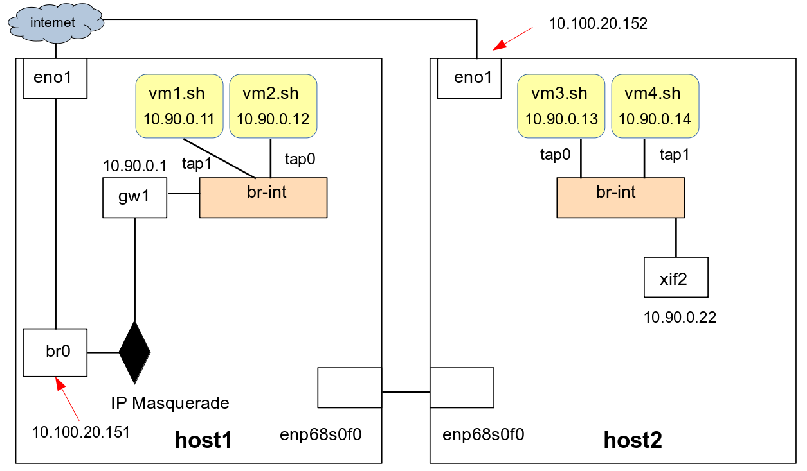
ภาพ 5-11 ก่อนการเชื่อมต่อ
GRE tunnelling ระหว่างโฮสต์
เป็นค่าทางเลือก
ในระบบจัดการระบบเครือข่ายเสมือนของระบบประมวลผลกลุ่มเมฆเช่นในระบบโอเพนสแตก
ค่าของฟิลด์เช่นคีย์จะถูกนำไปใช้เพื่อให้บริการระบบเครือข่ายเสมือนที่สามารถรองรับผู้ใช้ได้เป็นจำนวนมาก
เนื่องจากมีการใช้พื้นที่ของไอพีแพคเกตสำหรับเก็บค่าเฮดเดอร์ของเอ้าเตอร์แพคเกตและจีอาร์อีแฮดเดอร์
ผู้ใช้จึงจำเป็นต้องลดค่าขนาดของหน่วยของการส่งข้อมูล (Maximum Transmission Unit) หรือเอ็มทียู
(MTU)
จากที่ใช้ตามปกติลง ตามปกติแล้ว ค่าเอ็มทียูในไอพีแพคเกตคือ 1500 ไบต์
ซึ่งเมื่อสร้างระบบเครือข่ายเสมือนด้วยจีอาร์อีทันเนิล
ผู้เขียนจะกำหนดค่าเอ็มทียูที่ทุกวีเอ็มใช้เป็น 1450 ไบต์ ผู้อ่านสามารถศึกษาเพิ่มเติมเกี่ยวกับขนาดของเอ็มทียูได้ที่
ในบทนี้ผู้เขียนจะบรรยายการสร้างระบบเครือข่ายเสมือนที่เชื่อมต่อระหว่างสวิตช์เสมือนด้วยจีอาร์อีทันเนิล
ซึ่งเป็นพื้นฐานของการสร้างระบบเครือข่ายเสมือนที่ผู้ให้บริการระบบประมวลผลกลุ่มเมฆแบบโครงสร้างพื้นฐานใช้
ส่วนการกำหนดค่าคีย์และการใช้งานค่าคีย์เพื่อแบ่งแยกระบบเครือข่ายนั้นผู้เขียนจะไม่กล่าวถึงเนื่องจากอยู่นอกเหนือขอบเขตของตำราเล่มนี้
5.7.1
การสร้างจีอาร์อีทันเนิลระหว่างเครื่องโฮสต์สองเครื่อง
ในหัวข้อนี้
ผู้เขียนจะบรรยายการสร้างจีอาร์อีทันเนิลระหว่าง br-int ของเครื่อง host1 และ host2 ดังภาพ 5-8 ซึ่งผู้อ่านจะเห็นว่ามีวีเอ็มสี่เครื่องได้แก่ vm1 และ vm2 บนเครื่อง host1 และ vm3 และ vm4 บนเครื่อง host2 ผู้เขียนสมมุติว่าผู้อ่านได้ล็อกอินเข้าสู่เครื่องวีเอ็มทั้งสี่และกำหนดค่าไอพีของวีเอ็มทั้งสี่ดังภาพคือ
10.90.0.11 ถึง 10.90.0.14 สำหรับ vm1 ถึง vm4 ตามลำดับ
และกำหนดให้อินเตอร์เฟส gw1 บน host1 มีค่าไอพีคือ 10.90.0.1
และอินเตอร์เฟส xif2 บน host2 มีค่าไอพี 10.90.0.22
(และผู้อ่านลบ xif1 ออกไป)
ผู้เขียนจะแสดงขั้นตอนทีละขั้น
โดยที่เราจะเริ่มต้นตั้งแต่ไม่มีจีอาร์อีทันเนิล ดังภาพ 5-11
ขั้นที่ 1 : ผู้อ่านจะสร้างทันเนิลเอ็นพอยท์ (Tunnel End-Point)
บนเครื่องโฮสต์ทั้งสอง ทันเนิลเอ็นพอยท์ทั้งสองเป็นเสมือนจุดอ้างอิงสำหรับส่งไอพีแพคเกตข้ามเครื่อง
ในการสร้างเอ็นด์พอยท์บนเครื่อง host1 ผู้อ่านจะต้องทำดังนี้
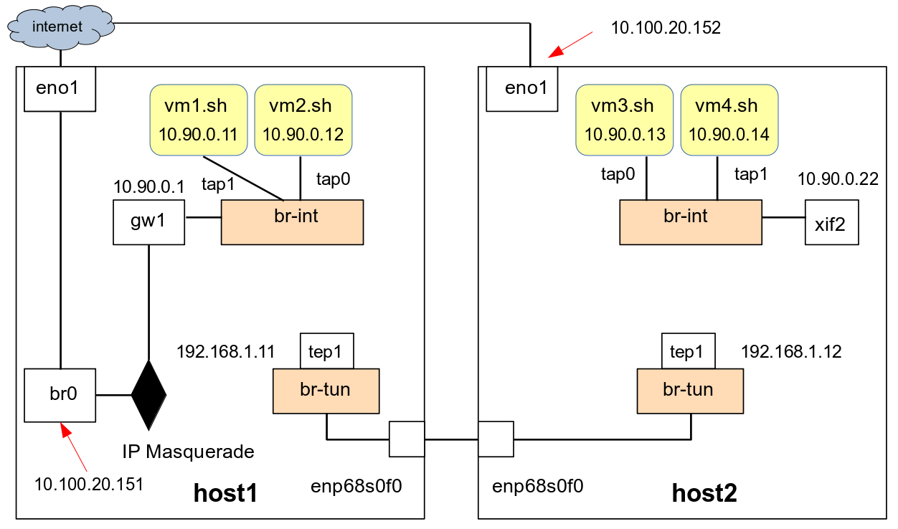
ภาพ 5-12 การสร้าง GRE tunnel endpoints
1. สร้างบริดจ์ใหม่ชื่อ
br-tun
2. เชื่อมต่ออินเตอร์เตอร์เฟส
enp68s0f0
ซึ่งเชื่อมต่อกับระบบเครือข่ายสำหรับติดต่อกับเครื่อง
host2
3. สร้างอินเตอร์เฟสแบบใช้ภายในเครื่อง
(internal) ชื่อ
tep1
เชื่อมต่อกับพอร์ต
tep1
ของ
br-tun
4. กำหนดค่าไอพี
192.168.1.11
ให้อินเตอร์เฟส
tep1
5.
แอคติเวท tep1
ซึ่งผู้อ่านต้องออกคำสั่งดังนี้
On host1: $ sudo ovs-vsctl add-br br-tun$ sudo ovs-vsctl add-port br-tun enp68s0f0$ sudo ovs-vsctl add-port br-tun tep1 -- set interface tep1 type=internal$ sudo ip address add 192.168.1.11/24 dev tep1 $ sudo ifconfig enp68s0f0 up$ sudo ifconfig tep1 up |
หลังจากนั้นผู้อ่านต้องทำแบบเดียวกันบนเครื่อง
host2 แต่กำหนดให้ tep1 มีค่าไอพีคือ 192.168.1.12 ดังนี้
On host2: $ sudo ovs-vsctl add-br br-tun$ sudo ovs-vsctl add-port br-tun enp68s0f0$ sudo ovs-vsctl add-port br-tun tep1 -- set interface tep1 type=internal$ sudo ip address add 192.168.1.12/24 dev tep1 $ sudo ifconfig enp68s0f0 up $ sudo ifconfig tep1 up |
ผลที่ได้จากการออกคำสั่งข้างต้นบนเครื่องโฮสต์ทั้งสอง
เป็นดังภาพ 5-12 ผู้อ่านสามารถทดสอบว่าเอ็นด์พอยท์ทั้งสองสามารถติดต่อกันได้โดยการ
ping ข้ามเครื่องจาก host2 ไปยัง host1
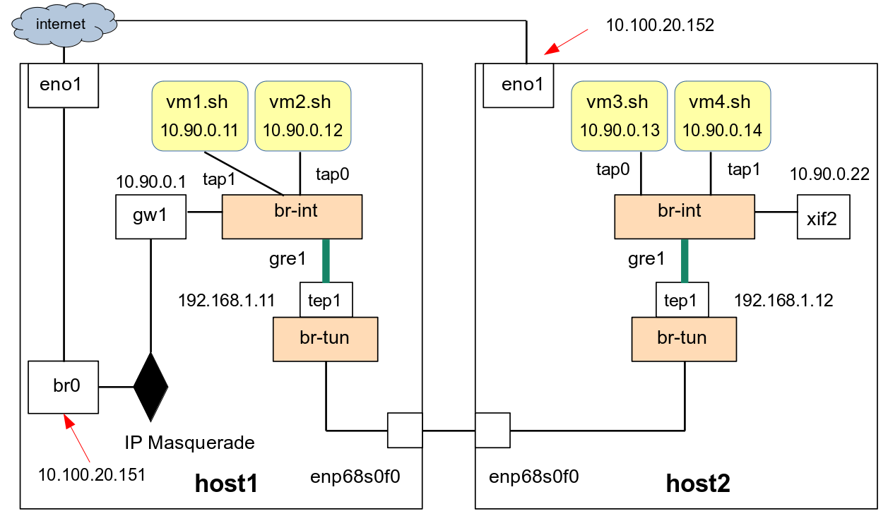
ภาพ 5-13 การสร้าง GRE tunnel ระหว่าง br-int
On host2: $ ping 192.168.1.11PING 192.168.1.11 (192.168.1.11) 56(84) bytes of data.64 bytes from 192.168.1.11: icmp_seq=1 ttl=64 time=0.277 ms^C--- 192.168.1.11 ping statistics ---2 packets transmitted, 2 received, 0% packet loss, time 1010msrtt min/avg/max/mdev = 0.198/0.237/0.277/0.039 ms$ |
และจาก host1 ไปยัง host2
On host1: $ ping 192.168.1.12PING 192.168.1.12 (192.168.1.12) 56(84) bytes of data.64 bytes from 192.168.1.12: icmp_seq=1 ttl=64 time=2.77 ms^C--- 192.168.1.12 ping statistics ---2 packets transmitted, 2 received, 0% packet loss, time 1002msrtt min/avg/max/mdev = 0.258/1.515/2.772/1.257 ms$ |
ขั้นที่ 2 : ผู้อ่านจะสร้างจีอาร์อีทันเนิลซึ่งจะใช้เอ็นด์พ๊อยที่สร้างขึ้นเป็นช่องทางติดต่อ
จีอาร์อีทันเนิลเป็นระบบเครือข่ายเสมือนแบบโอเวอร์เลย์ที่มีลักษณะการเชื่อมต่อเป็นแบบจุดต่อจุด
(point to point) เมื่อผู้อ่านสร้างจีอาร์อีอินเตอร์เฟสและเชื่อมต่ออินเตอร์เฟสนั้นเข้ากับ
br-int บนเครื่องโฮสต์ต้นทาง
ผู้อ่านจะต้องระบุค่าไอพีของเอ็นด์พอยท์ปลายทางด้วย
และเพื่อให้การสื่อสารข้อมูลสามารถทำได้ในสองทิศทางผู้อ่านจะต้องสร้างจีอาร์อีอินเตอร์เฟสบนเครื่องโฮสต์ที่เป็นคู่ของการสื่อสารแบบจุดต่อจุดทั้งสองเครื่อง
บนเครื่อง host1 ผู้อ่านจะสร้างจีอาร์อีอินเตอร์เฟสชื่อ gre1 และเชื่อมต่อเข้ากับพอร์ต
gre1 บนบริดจ์ br-int ด้วยคำสั่งต่อไปนี้
ขอให้สังเกตว่าผู้อ่านต้องระบุค่า remote_ip เป็นค่าไอพีของเอ็นพอยท์อีกฝั่งหนึ่งของการสื่อสารแบบจุดต่อจุด
On host1: $ sudo ovs-vsctl add-port br-int gre1 -- set interface gre1 type=gre \ options:remote_ip=192.168.1.12$ |
หลังจากนั้นผู้อ่านจะต้องสร้างอินเตอร์เฟสสำหรับจีอารือีทันเนิลในลักษณะเดียวกันกับที่ทำบน
host1 ชื่อ gre1 บนเครื่อง host2
อินเตอร์เฟสนี้จะเชื่อมต่อกับพอร์ตชื่อ gre1 ของบริดจ์ br-int ปละผู้อ่านจะได้จิอาร์อีทันเนิลดังภาพ 5-13
On host2: $ sudo ovs-vsctl add-port br-int gre1 -- set interface gre1 type=gre \ options:remote_ip=192.168.1.11$ |
เมื่อผู้อ่านใช้คำสั่งแสดงโครงสร้างของบริดจ์และพอร์ตของระบบโอเพนวีสวิตช์บนเครื่อง
host1 จะเป็นดังนี้
On host1: $ sudo ovs-vsctl show .. Bridge br-int Port gw1 Interface gw1 type: internal Port tap0 Interface tap0 Port gre1 Interface gre1 type: gre options: {remote_ip="192.168.1.12"} Port tap1 Interface tap1 Port br-int Interface br-int type: internal Bridge br-tun Port enp68s0f0 Interface enp68s0f0 Port tep1 Interface tep1 type: internal Port br-tun Interface br-tun type: internal...$ |
และเช่นเดียวกันโครงสร้างของอุปกรณ์เสมือนของโอเพนวีสวิตช์บนเครื่อง
host2 ได้แก่
On host2: $ sudo ovs-vsctl show... Bridge br-tun Port enp68s0f0 Interface enp68s0f0 Port tep1 Interface tep1 type: internal Port br-tun Interface br-tun type: internal Bridge br-int Port gre1 Interface gre1 type: gre options: {remote_ip="192.168.1.11"} Port tap1 Interface tap1 Port xif2 Interface xif2 type: internal Port br-int Interface br-int type: internal Port tap0 Interface tap0 ...$ |
ขั้นที่ 3 : จากที่ผู้เขียนได้อธิบายไปก่อนหน้าว่าสิ่งที่ผู้ใช้ต้องเสียไปเมื่อใช้จีอาร์อีทันเนิลเพื่อสื่อสารข้อมูลคือการลดลงของพื้นที่สำหรับเก็บข้อมูลในไอพีแพคเกตเนื่องจากจีอาร์อีโปรโตคอลต้องใช้พื้นที่ส่วนหนึ่งสำหรับเก็บจีอาร์อีเฮดเดอร์
ด้วยเหตุนี้ ผู้อ่านจึงจำเป็นต้องลดขนาดของเอ็มทียู
บนอินเตอร์เฟสทุกอินเตอร์เฟสที่เชื่อมต่อกับเครื่องโฮสต์และวีเอ็มจาก 1500 ไบต์ตามปกติเป็น
1450 ไบต์ ดังภาพ 5-14
จากภาพ บนเครื่อง host1 ผู้อ่านสามารถใช้คำสั่งต่อไปนี้เพื่อกำหนดค่าเอ็มทียูของ
gw1 แต่เมื่อมีการรีบูทเครื่องค่าที่กำหนดอาจถูกลบไป
On host1: $ sudo ip link set dev gw1 mtu 1450 |
ในกรณีที่ผู้ใช้ต้องการให้ gw1 มีค่าไอพีและเอ็มทียูเช่นนี้หลังจากการรีบูท
ผู้อ่านต้องใช้วิธีการของแพคเกจอิฟอับดาวน์ (ifupdown) คือการกำหนดค่าในไฟล์ /etc/network/interfaces
On host1: $ sudo vi /etc/network/interfaces$ cat /etc/network/interfaces...
auto gw1 iface gw1 inet static address 10.90.0.1 netmask 255.255.255.0 mtu 1450 ...$ sudo ifup gw1 |
ผู้อ่านสามารใช้วิธีเดียวกันกำหนดค่าไอพีและเอ็มทียูให้กับอินเตอร์เฟส
xif2
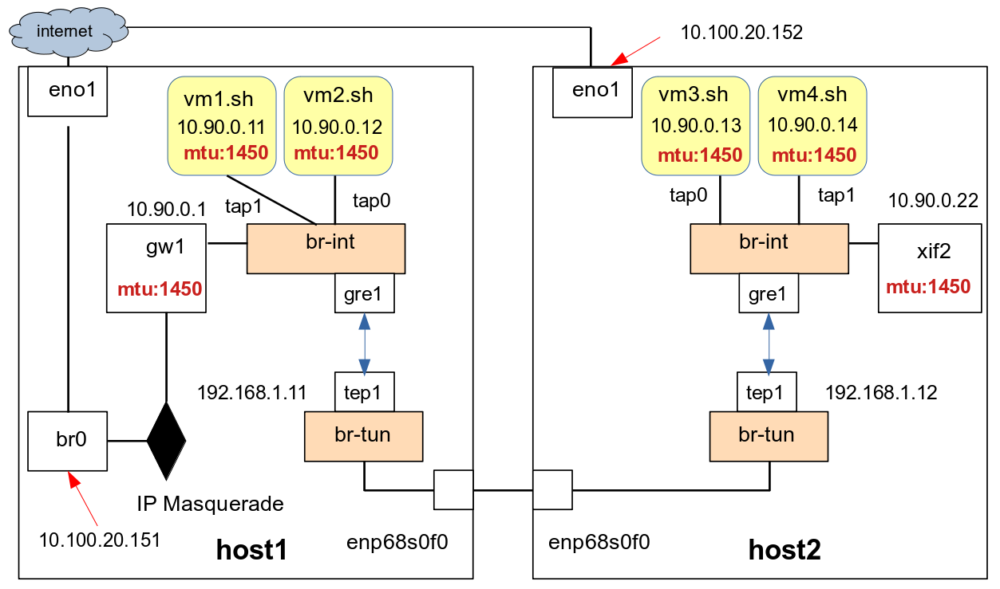
ภาพ 5-14 การกำหนดค่า MTU สำหรับ GRE tunnelling
ในการกำหนดค่าไอพีและขนาดเอ็มทียูของวีเอ็ม ยกตัวอย่างเช่น
vm1 ผู้อ่านสามารถกำหนดค่าด้วยเน็ตแพลนดังที่จะแสดงต่อไป
และผู้อ่านต้องทำแบบเดียวกันสำหรับทุกวีเอ็ม
On vm1: $$ sudo vi /etc/netplan/00-installer-config.yaml $ cat /etc/netplan/00-installer-config.yaml...network: ethernets: ens3: addresses: - 10.90.0.11/24 gateway4: 10.90.0.1 mtu: 1450 nameservers: addresses: - 8.8.8.8 search: - tu.ac.th version: 2$$ sudo netplan apply |
หลังจากนั้นผู้อ่านสามารถ ping จากเครื่องโฮสต์เครื่องใดก้ได้สู่วีเอ็มเครื่องใดก็ได้
เมื่อมีการสื่อสารระหว่างวีเอ็มหรือโฮสต์ข้ามเครื่อง
ข้อมูลจะถูกส่งจากโฮสต์หรือวีเอ็มบนเครื่องต้นทางเข้าสู่บริดจ์ br-int บนเครื่องต้นทาง
และถูกส่งต่อผ่านทันเนิล gre1 ไปยังบริดจ์ br-int บนเครื่องปลายทาง
และถูกส่งต่อไปยังวีเอ็มหรือโฮสต์ปลายทางในที่สุด
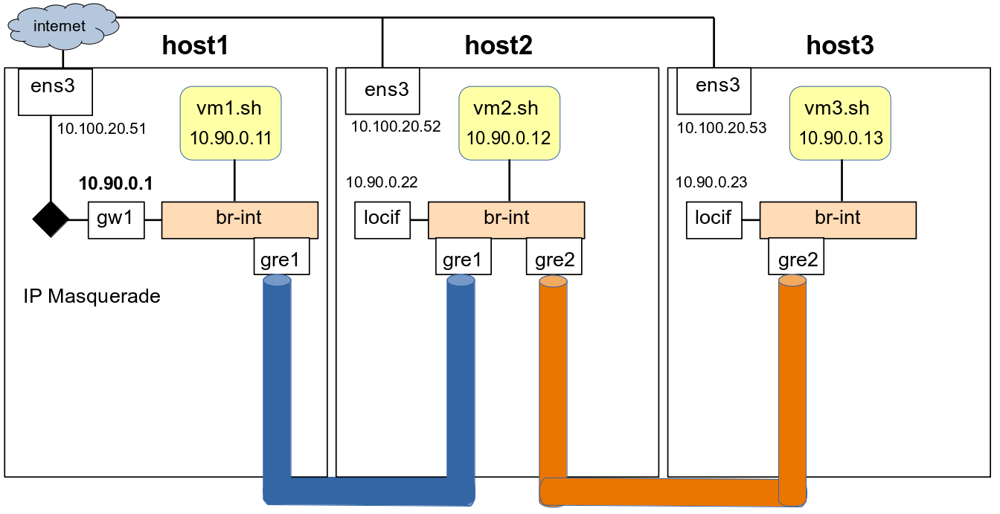
ภาพ 5-15 การสร้าง GRE tunnel เชื่อมต่อสามโฮสต์
แบบเดซี่เชน
5.7.2
การสร้างจีอาร์อีทันเนิลเพื่อเชื่อมต่อหลายโฮสต์
ในกรณีที่ผู้อ่านต้องการสร้างจีอาร์อีทันเนิลเพื่อเชื่อมต่อสวิตช์เสมือนบนเครื่องโฮสต์มากกว่าหนึ่งเครื่องผู้อ่านสามารถสร้างการเชื่อมต่อแบบจุดต่อจุดบนเครื่องโฮสต์สามเครื่องด้วยการเชื่อมต่อแบบเดซี่เชน
(Daisy Chain) ดังภาพที่ 5-15 ซึ่งเป็นการเชื่อมต่อ
br-int บนเครื่องโฮสต์ทั้งสามเครื่องโดยสร้างจีอารอีทันเนิล
gre1 เพื่อเชื่อมต่อ br-int ของ host1 และ host2 และสร้างจีอารอีทันเนิล
gre2 เพื่อเชื่อมต่อ br-int ของ host2 และ host3 ในภาพเราสมมุติว่าเครื่อง
host1 มีค่าไอพีคือ 10.100.20.51 และ host2 มีไอพี 10.100.20.52 และ host3 มีไอพีคือ 10.100.20.53 นอกจากนั้นเราสมมุติด้วยว่าเครื่อง
host1 มีอินเตอร์เฟสภายใน
gw1 ที่เชื่อมต่อกับ
br-int และมีค่าไอพีคือ
10.90.0.1 และมีกระบวนการไอพีมาสควอเรด
ส่วนเครื่อง host2 และ host3 ก็มีอินเตอร์เฟส
locif เชื่อมต่อกับ br-int เช่นกันและมีไอพี
10.90.0.22 และ 10.90.0.23 ดังภาพ
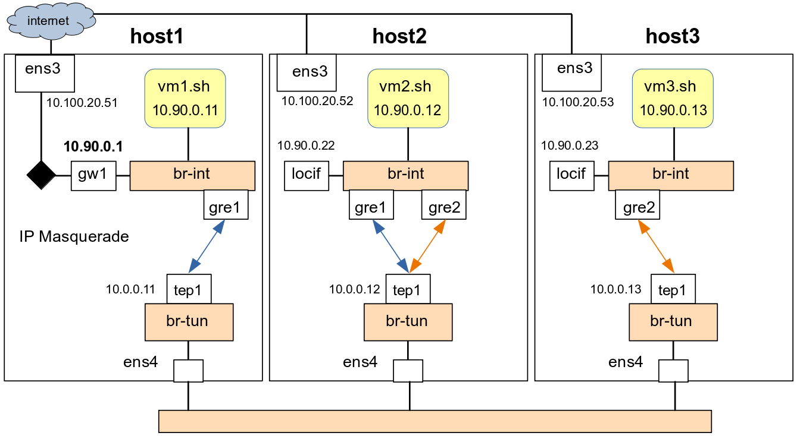
ภาพ 5-16 การสร้าง GRE tunnel เชื่อมต่อสามโฮสต์ในรายละเอียด
จากภาพเราสมมุติด้วยว่ามีวีเอ็มรันอยู่บนโฮสต์ทั้งสามได้แก่
vm1 มีค่าไอพี 10.90.0.11 รันบนโฮสต์ host1 และ vm2 มีค่าไอพี 10.90.0.12 รันบน host2 และ vm3 มีค่าไอพี 10.90.0.13 รันอยู่บน host3 ทุกวีเอ็มมีแทปอินเตอร์เฟสเชื่อมต่อกับ
br-int บนเครื่องของตน
ในหัวข้อนี้ผู้อ่านจะสร้างการเชื่อมด้วยจีอาร์อีทันเนิลดังทีกล่าวไปแล้วข้างต้น
โดยมีรายละเอียดของส่วนประกอบดังภาพ 5-16 ซึ่งผู้อ่านจะทำตามขั้นตอนต่อไปนี้
ขั้นที่ 1 : ผู้อ่านสร้างทันเนิลเอ็ดพอยท์บนเครื่อง
host1 และกำหนดให้มีค่าไอพีคือ
10.0.0.11
On host1: $ sudo ovs-vsctl add-br br-int$ sudo ovs-vsctl add-br br-tun$ sudo ovs-vsctl add-port br-tun ens4$ sudo ovs-vsctl add-port br-tun tep1 -- set interface tep1 type=internal$ sudo ip address add 10.0.0.11/24 dev tep1$ sudo ifconfig ens4 up$ sudo ifconfig tep1 up |
ผู้อ่านสร้างทันเนิลเอ็ดพอยท์บนเครื่อง host1 และกำหนดให้มีค่าไอพีคือ
10.0.0.12
On host2: $ sudo ovs-vsctl add-br br-int$ sudo ovs-vsctl add-br br-tun$ sudo ovs-vsctl add-port br-tun ens4$ sudo ovs-vsctl add-port br-tun tep1 -- set interface tep1 type=internal$ sudo ip address add 10.0.0.12/24 dev tep1$ sudo ifconfig ens4 up$ sudo ifconfig tep1 up |
ผู้อ่านสร้างทันเนิลเอ็ดพอยท์บนเครื่อง host1 และกำหนดให้มีค่าไอพีคือ
10.0.0.13
On host3: $ sudo ovs-vsctl add-br br-int$ sudo ovs-vsctl add-br br-tun$ sudo ovs-vsctl add-port br-tun ens4$ sudo ovs-vsctl add-port br-tun tep1 -- set interface tep1 type=internal$ sudo ip address add 10.0.0.13/24 dev tep1$ sudo ifconfig ens4 up$ sudo ifconfig tep1 up |
และทดสอบว่าสามารถ ping กันและกันได้
On host1: $ ping 10.0.0.12$ ping 10.0.0.13 |
ขั้นที่
2 : สร้างทันเนิลชื่อ gre1 จาก host1 ไปยัง host2
On host1: $ sudo ovs-vsctl add-port br-int gre1 -- set interface gre1 type=gre \ options:remote_ip=10.0.0.12$ $ sudo ovs-vsctl showf8763b9e-36d7-4018-b5eb-8a712445f867 Bridge br-int Port gre1 Interface gre1 type: gre options: {remote_ip="10.0.0.12"} Port br-int Interface br-int type: internal Bridge br-tun Port tep1 Interface tep1 type: internal Port br-tun Interface br-tun type: internal Port ens4 Interface ens4 ovs_version: "2.13.1"$ |
ผู้อ่านสร้างทันเนิลชื่อ gre1 จาก host2 ไปยัง host1 และสร้างทันเนิลชื่อ gre2 จาก host2 ไปยัง host3
On host2: $ sudo ovs-vsctl add-port br-int gre1 -- set interface gre1 type=gre \ options:remote_ip=10.0.0.11$ sudo ovs-vsctl add-port br-int gre2 -- set interface gre2 type=gre \ options:remote_ip=10.0.0.13$openstack@vm2:~$ sudo ovs-vsctl show5a6c6f7b-77e5-44c1-8bc9-843ffafabd09 Bridge br-int Port gre1 Interface gre1 type: gre options: {remote_ip="10.0.0.11"} Port br-int Interface br-int type: internal Port gre2 Interface gre2 type: gre options: {remote_ip="10.0.0.13"} Bridge br-tun Port tep1 Interface tep1 type: internal Port br-tun Interface br-tun type: internal Port ens4 Interface ens4 ovs_version: "2.13.1"openstack@vm2:~$ |
ผู้อ่านสร้างทันเนิลชื่อ gre2 จาก host3 ไปยัง host2
On host3: $ sudo ovs-vsctl add-port br-int gre2 -- set interface gre2 type=gre \ options:remote_ip=10.0.0.12$$ sudo ovs-vsctl show8f04d918-c900-499a-85a5-f077c5cc4fd1 Bridge br-int Port gre2 Interface gre2 type: gre options: {remote_ip="10.0.0.12"} Port br-int Interface br-int type: internal Bridge br-tun Port tep1 Interface tep1 type: internal Port br-tun Interface br-tun type: internal Port ens4 Interface ens4 ovs_version: "2.13.1"$ |
ผู้เขียนจะละการกำหนดค่าส่วนอื่นให้ผู้อ่านทำเป็นแบบฝึกหัด
5.7 บทสรุป
ในบทนี้
ผู้เขียนได้บรรยายการสร้างระบบเครือข่ายเสมือนในรูปแบบต่างๆโดยละเอียด
ผู้อ่านสามารถทำตามขั้นตอนทีละขั้นเพื่อทดลองสร้างระบบเครือข่ายเสมือนรวมทั้งวีเอ็มที่ประมวลผลบนระบบเครือข่ายเสมือนนั้นด้วยตนเอง
เนื้อหาในบทนี้เริ่มต้นจากการแนะนำการใช้งานซอฟต์แวร์โอเพนวีสวิตช์เพื่อสร้างซอฟต์แวร์สวิตช์บนเครื่องโฮสต์คอมพิวเตอร์เครื่องเดียว
การเชื่อมต่อวีเอ็มเข้ากับซอฟต์แวร์สวิตช์นั้น
การสร้างและใช้งานเร้าเตอร์แบบเสมือนโดยใช้ไอพีมาสควอเรด
การเชื่อมต่อซอฟต์แวร์สวิตช์ข้ามเครื่องโฮสต์คอมพิวเตอร์
การกำหนดค่าวีแลนแทกบนซอฟต์แวร์สวิตช์ การกำหนดค่าวีแลนแทกโดยใช้วิธีการเฟกบริดจ์
การเชื่อมต่อซอฟต์แวร์สวิตช์ข้ามเครื่องโฮสต์โดยใช้จีอาร์อีทันเนิล
ทั้งหมดนี้เป็นการสร้างระบบเครือข่ายเสมือนด้วยซอฟต์แวร์สวิตช์และซอฟต์แวร์เร้าเตอร์ในระดับพื้นฐานเพื่อนำส่งข้อมูลระหว่างวีเอ็มและโฮสต์คอมพิวเตอร์ตามที่ผู้ใช้ต้องการ
ในขั้นถัดไป ผู้ใช้สามารถใช้ความสามารถซอฟต์แวร์แบบกำหนดเพื่อสร้างระบบควบคุมการสื่อสารข้อมูลในระบบเครือข่ายนี้
โดยใช้กระบวนการเช่นโอเพนโฟลว์โปรโตคอลต่อไป
5.8 แบบฝึกหัด
ข้อ
1.
ขอให้ผู้อ่านสร้างระบบเครือข่ายเสมือนโดยใช้ GRE tunelling เพื่อเชื่อมต่อซอฟต์แวร์สวิตช์บนเครื่องโฮสต์
5 เครื่องโดยให้มีโทโพโลยีของการเชื่อมต่อเป็นแบบดาว
โดยมีเครื่องหนึ่งในห้านั้นเป็นเครื่องที่รันซอฟต์แวร์สวิตช์ศูนย์กลาง
ข้อ
2.
จงอธิบายว่าเพราะเหตุใดจึงต้องใช้ GRE tunnelling หรือ VXLAN tunneling
แทน VLAN เพื่อรองอรับการสื่อสารข้อมูลในศูนย์ข้อมูลของผู้ให้บริการการประมวลผลกลุ่มเมฆ
ข้อ
3. กำหนดให้มีโฮสต์คอมพิวเตอร์สองเครื่องที่แต่ละเครื่องมีสเปคซิฟิเคชั่นขั้นต่ำดังนี้
1.
ซีพียูคอร์อย่างต่ำสองซีพียูคอร์
2.
มีขนาดของหน่วยความจำอย่างน้อย 4 GB
และ
3.
หน่วยเก็บข้อมูลขนาด 20 GB ขึ้นไป
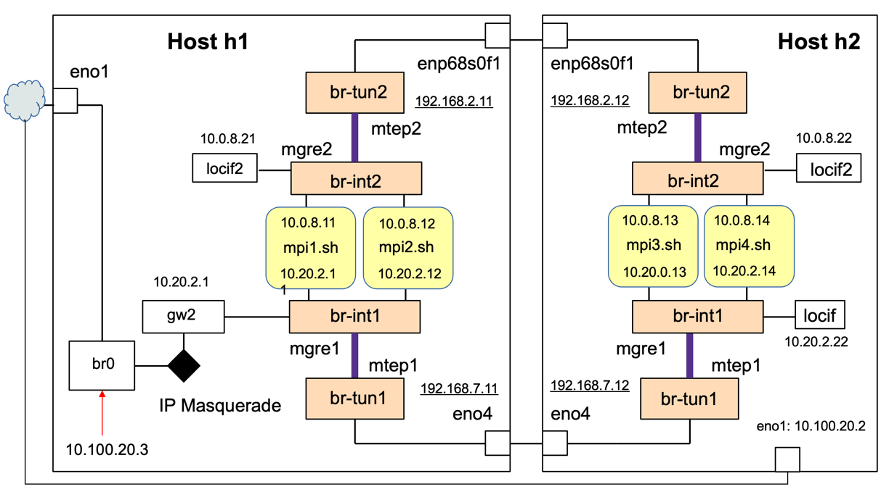
ภาพ 5-17 โครงสร้างของคลัสเตอร์ของวีเอ็ม
4.
มีเน็ตเวอร์อินเตอร์เฟสการ์ดสามอินเตอร์เฟส
โดยกำหนดให้มีการเชื่อมต่อกันเหมือนกับในภาพ 5-15 กล่าวคือ (1) มีเน็ตเวิร์คอินเตอร์เฟสการ์ดที่มีลักษณะการเชื่อมต่อเหมือนกับ
enp68s0f0 ของทั้งสองเครื่องที่เชื่อมต่อกับระบบเครือข่ายและสามารถสื่อสารถึงกันและกันได้
(2) มีเน็ตเวิร์คอินเตอร์เฟสการ์ดที่มีลักษณะการเชื่อมต่อเหมือนกับ
eno4 ของทั้งสองเครื่องที่เชื่อมต่อกับระบบเครือข่ายและสามารถสื่อสารถึงกันและกันได้
และ (3) มีเน็ตเวิร์คอินเตอร์เฟสการ์ดที่มีลักษณะการเชื่อมต่อเหมือนกับ
eno1 ที่เชื่อมต่อกับอินเตอร์เน็ตและอนุญาตให้ผู้ใช้ล็อกอินทางไกลเข้าใช้เครื่องทางอินเตอร์เฟสนี้
ขอให้ผู้อ่านสร้างคลัสเตอร์ของวีเอ็มดังภาพ
5-17 โดยให้มีโครงสร้างของวีเอ็มดิสค์อิมเมจดังภาพ
5-18 และอธิบายขั้นตอนการสร้างและแสดงคำสั่งทุกคำสั่ง
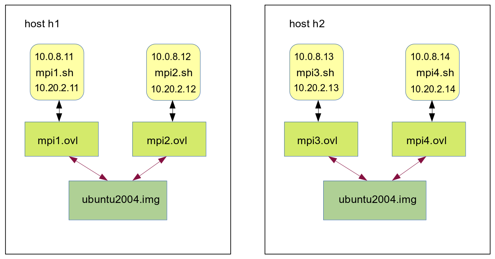
ภาพ 5-18 โครงสร้างของคลัสเตอร์ของวีเอ็ม